Situation of Chapter 3 in the methodological workflow.
In this first chapter of three that are dedicated to the model, we explain the choices that we made about representing and calculating the mechanical interactions and behavioral properties of the cells (Fig. ). Chemical signaling and internal gene expression will be the topic of Chapter 4 (albeit in less detail), while the overall plan of building a complete morphogenetic platform integrating mechanics and genetics will be exposed in Chapter 5. Altogether, our agent-based modeling and simulation endeavors set the stage for an in silico embryo, i.e. a virtual test object that can be manipulated and experimented upon (like putty or clay) in ways impossible with a real embryo. The goal is of course to better understand embryogenesis, and how the particular zebrafish study represents only one specific parametric instance among a much broader class of generic phenomema. Naturally, this virtual embryo, although deprived of life, still behaves very much like a living entity, animated by the processing units and execution threads of the computers that calculate it. It is a form of active matter composed of a great number of self-propelled particles (cells), which carry instructions (rules and local data) diverse enough to equip them with a rich repertoire of potential decisions and actions that are function of what they sense from their surroundings. Note that the global environment here will be reduced to a simplified physical world, where gravity doesn't play any role, so that the only forces maintaining the cohesion of the embryo will be found among the cells.
3.1. State of the Art in Biomechanical Modeling
Before describing the cell mechanical model that we have designed (in Section 3.2), we present here a brief review of the scientific literature. We start with a sampler of different families of models in Section 3.1.1, from continuous to discrete spaces, of geometrical or physical inspiration, then we focus on the specifics of particle-based methods in Section 3.1.2, which will serve as a basis for our own approach.
3.1.1. The Many Viewpoints on Soft Matter: From Continuous-Space to Discrete-Element Models
By explicitly introducing the concept of Entwicklungsmechanik in the 1880's, Wilhelm Roux established the importance of mechanics in the study of developmental systems. Since then, a great number and diversity of theoretical models of biomechanics have been proposed at several levels of abstraction—and speculation. The unfolding and expansion of the embryo, an endless source of fascination, has been examined from vastly different viewpoints from all corners of science and engineering. Depending on the researchers' background and their focus of interest, embryogenesis (formerly embryology) has been assimilated to differential geometry, pattern formation, fluid dynamics, material physics, systems architecture, cellular automata or collective motion, among many other fields and disciplines. The growth and shaping of cells, tissues and organs have been variously compared to manifolds, balloons, tensegrity structures, bubbles, swarms, and so on. Truth is, the extraordinarily rich biological material that composes a multicellular organism is all of the above—and much more. At the emergent, phenomenological scale of observation, it seems to obey nothing like the common-sense physical laws and invariant geometrical properties of mundane, human-scale artefacts. Nonetheless, these attempts are all useful to help us capture a piece of this puzzle and bring us closer to a more accurate and complete picture.
We propose here a sampling of different broad families of theoretical models that have tried to describe the spatial dynamics of the growing embryo by various means. Their common purpose is to propose a mechanical explanation that should be necessary and sufficient to generate the observed kinematic behavior of the cell tissue. Again, the diversity of these approaches is due to the extremely elusive nature of multicellular systems compared to the traditional objects studied by physics. Classical physics has developed a framework suited to fixed objects presenting high spatio-temporal regularities. In contrast, the living matter is riddled with heterogeneity, irregularities and ceaseless internal dynamicity and adaptivity. Local cell behavior and global tissue properties can change rapidly as they rests upon a molecular structure in constant flux and state of self-reorganization. This heterogeneity of behavior also gave rise to a heterogeneity of models, some more specialized than others in certain aspects of cell dynamics, and unfortunately not always immediately compatible with each other (for example, the concept of interfacial tension is not a clear contributor to the phenomenon of protrusion; see below).
In general, cells behave neither like a solid nor like a fluid—rather, they behave like both at the same time. This is why cell tissue is sometimes described as soft matter. Another fundamental notion to keep in mind when describing the behavior of cells is their ability to perpetually convert stored energy into mechanical work, which puts them into permanent out-of-equilibrium states, far from the descriptions of classical mechanics and thermodynamics. This notion is at the foundation of what is called today active matter in modern physics, and is applied to various levels of organization, from macromolecules to cells to flocking birds . Qualifiers commonly used for these objects are self-x (e.g. self-propelled, self-healing, etc.) or spontaneous, since they convey the idea an agent capable of autonomous actions independent from external influences. In egg-contained embryos, the source of energy necessary for the motion and behavior of the cells is found in the yolk. In mammmals, the energy is provided by the mother essentially in the form of nutrients, not direct mechanical action.
In this section, we distinguish among the different approaches to cell dynamics based on whether they adopt a macroscopic viewpoint relying on continuous space or a microscopic viewpoint relying on discrete elements (Fig. ):
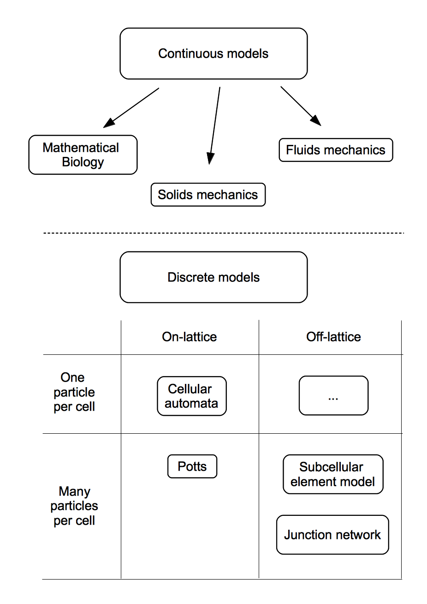
The schematic categorization of the models adopted in this review.
Macroscopic viewpoint: continuous-space descriptions of the embryo set behavioral laws directly at the global tissular level without explicit underlying cellular or molecular components. They are generally based on macroscopic (spatial) differential equations, which have the advantage of compactness, as they offer an inclusive representation of development in one or a few formulas. On the other hand, the main disadvantage of grand formalisms can also be too much generality and vagueness, with a consequent lack of specific operational tools. In any case, cell tissue in this paradigm is construed as a continuous mass, equivalent to an infinity of infinitesimal points. We distinguish here two main perspectives, both forms of mathematical biology: solid mechanics and fluid mechanics.
Microscopic viewpoint: discrete-element descriptions of biological tissue considers the cells (and sometimes the subcellular structures and molecules) that constitute it as autonomously acting components. It is their collective behavior that determines the mechanical properties of the tissue at the emergent level. As they do not always coincide one-to-one with cells (sometimes subcellular or supracellular), the elements of discrete models are alternatively called particles. Their properties generally include spatial coordinates and geometric properties, and optionally mechanical/physical properties, too. We distinguish here four groups, depending on whether particles are confied to a discrete grid or not, and cells are made of several particles or only one.
Continuous Models
Mathematical Biology
Among James Murray's classical works in mathematical biology , , Murray and Oster propose a specific model of biological pattern formation , which describes the behavior of a tissue comprising mesenchymal cells. In this model, the temporal rate of cell density is related to the flux of cells and the mitotic rate. The flux function takes into account different transport effects such as convection and random dispersal. The following two sections illustrate this continuum mechanics paradigm, which treats the embryo as bulk matter, and is broadly divided into solid mechanics and fluid mechanics. A distinctive feature of solids and fluids is their unequal ability to resist to the action of a shearing force tangential to the surface. Both fields distinguish different types of bulk behavior and both have been applied to biological matter and multicellular tissue. In the case of fluids, stresses are linked to velocity fields through a continuity equation and conservation laws. In the case of solids, stresses are linked to a deformation tensor (strain) .
Solid Mechanics
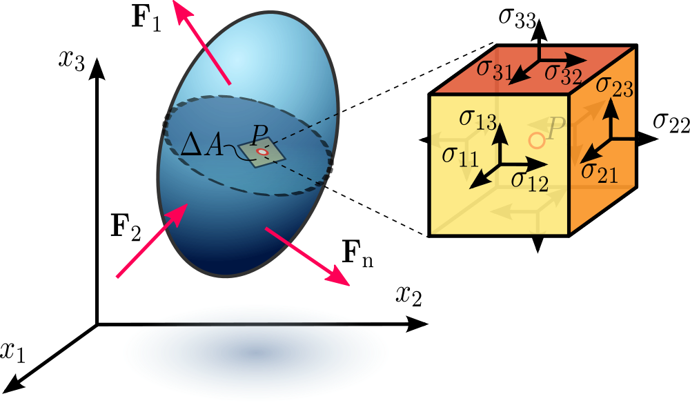
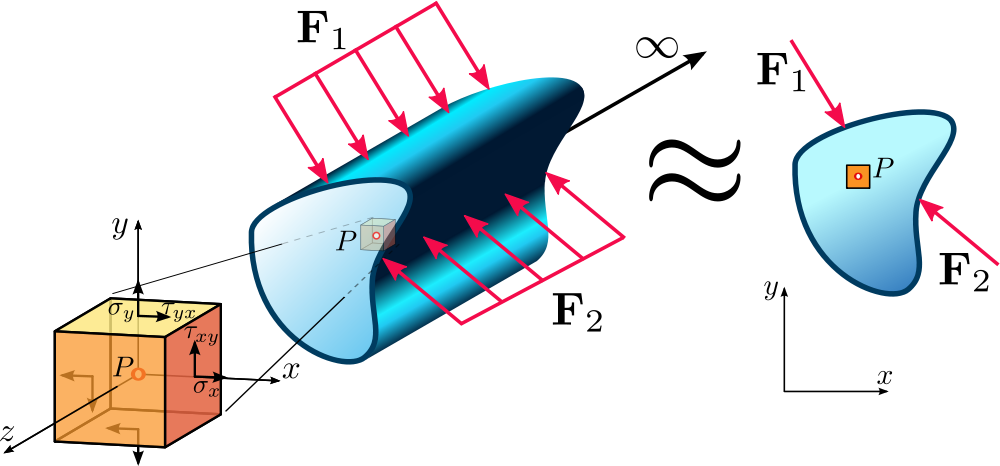
Stress and Strain. Left. Stress from a loaded deformable material body assumed as a continuum from Wikipedia. Right. Plane strain state in a continuum from Wikipedia.
Solid mechanics focuses on the study of the response of solid matter to the action of forces and/or thermal loading. The most important theoretical tool used in solid mechanics is the tensor: it is a 3D matrix that represents an ellipsoid whose axes convey the principal directions and amplitude of the gradient of some quantity in a local neighborhood. Typical relevant quantities are the strain and the stress. The strain expresses the deformation of the solid, and is deduced from the displacement of the solid. The stress is a measure of the internal forces acting inside the solid as a reaction to an external action, and its dimension is force per unit area (Fig. ). The relation between the stress tensor and the strain tensor establishes the mechanical properties of the matter.
These mechanical properties can be of various types, such as linear/nonlinear elasticity (hyperelasticity), plasticity and elastoplasticity, or viscoelasticity:
Linear elasticity refers to the ability of a material to recover its original shape after external forces, causing relatively small deformations, are removed. It is deemed linear when the material deformation is proportional to the applied load (e.g., the classical Hooke's law \(x=F/k\) of springs). An example of elastic model in biological development can be found in : here, the meristem of Arabidopsis is represented by two layers of polyhedral cells interacting via their walls, which are considered isotropic elastic material. Outer walls are made stronger than inner walls due to an elevated elastic modulus.
Nonlinear elasticity: nonlinear elasticity, however, is more appropriate to the description of most observed material behavior, especially biological matter. For example, in a 3D finite element model of ventral furrow invagination in the Drosophila melanogaster embryo makes use of neo-Hookean hyperelastic material.
Plasticity refers to materials that can undergo permanent deformation after forces have been applied to them (e.g. metals or soils). In combination with elasticity, elastoplasticity can also describe the peculiar behavior of certain biological tissues. For example, in , embryonic sheets in the chick are viewed as a very soft solid that can deform and yield. In a first approximation, the elastic deformation of the blastodisc sheets is calculated and further assumptions lead to the conclusion that the deformation is in fact proportional to the gradient of pressure.
Viscoelasticity qualifies solid materials that exhibit fluid-like properties, such as certain types of plastics. For example, proposes a model of epithelium pattern through a viscoelastic field equation system, in which the contraction is triggered by a calcium pulse. Another quantitative study of living embryonic tissues presents an experimental technique that allows the compression and relaxation of cellular aggregates. Here, a generalized Kelvin-body model of viscoelasticity is used.
Fluid Mechanics
Fluid mechanics focuses on the study of liquids, gases and plasmas, and their response to forces applied to them. As a part of continuum mechanics, fluid mechanics assumes that the properties of fluid density, pressure, temperature and velocity are continuous. The fundamental hypotheses of fluid mechanics are the conservation of mass (rate of mass change in an elementary volume equals rate of incoming mass minus rate of outgoing mass), conservation of energy, conservation of momentum, and continuity Concerning the last hypothesis, the continuity equation ensures that mass, energy and momentum are also locally conserved as they can only move in a continuous flow. The principal equation ruling fluid behavior is the Navier-Stokes equation. It describes the motion of the fluid as a function of the balance of forces acting on it. Its general form for the conservation of momentum reads
where \({\bf v}\) is the velocity vector, \(\rho\) is the density of the fluid, \(\mathbb{P}\) is a tensor which describes the normal and tangential stresses applied on a fluid particle, \({\bf F}\) is a body force vector (force per unit volume). Additional conditions on the fluid proprieties can lead to a solvable set of equations. If the fluid is incompressible, the divergence of the stress term \(\nabla \mathbb{P}\) is replaced by the sum of a pressure gradient \(- \nabla p\) for the normal component of the stress and, for a Newtonian fluid, a dynamic viscosity constant \(\mu\) times the Laplacian of the velocity \(\nabla^2{\bf v}\) expresses the tangential component of the stress.
Unfortunately, in biological material, the Newtonian assumption is hardly satisfying as the viscosity model is not linear. The use of more complicated non-linear stress tensor is required and under particular external conditions, holes may appear in the continuum. However, a simplifying assumption adapted to biological material can be made as the inertial forces (LHS of the Navier-Stokes equation) are negligible compared to the forces of viscosity (RHS of Navier-Stokes). The Stokes equation expresses this assumption:
$$\nabla \mathbb{P} + {\bf F} = 0$$
Only the simplest forms of the Navier-Stokes equation are analytically solvable (e.g. Poiseuille flow, Couette flow, Taylor-Green vortex, etc.), more complex conditions requiring the use of computer simulations also called Computational Fluid Dynamics (CFD).
Among examples of developmental models that make use of the Navier-Stokes equation, proposes a model of branching morphogenesis involving both an epithelial tissue and a mesenchymal tissue to behave like Stokes fluids with different viscosities separated by an interface. In a hydrodynamic simulation of multicellular embryo invagination , the authors sucessfully couple the behavior of a viscous incompressible fluid ruled by Stokes equation with the movement of a membrane of cells during epithelial invagination. Another model of the chick embryo based on a discontinuity of tissue flow leading to the formation of the cephalic fold also uses Stokes fluid to model folding processes.
Discrete Models
In this category, models can be contrasted depending whether they also discretize the space (which contains the discrete elements) or not. The spatial coordinates of the elements may either belong to a grid, i.e. integer multiples of given elementary distances, or the entire Euclidean space (\(\mathbb{R}^3\)), i.e. unconstrained real values. We call the first type of approach on-lattice, and the second type off-lattice. Another distinction, orthogonal to the previous one, can be made across the number of particles used to represent a cell, whereas it is one or many. The combination of these two dimensions gives rise in principle to four categories (Fig. ).
On-Lattice Models with One Particle per Cell
This category is represented by cellular automata (CA), which assimilate a biological cell to one grid cell (pixel in 2D, voxel in 3D). A cell's neighborhood can be defined in various ways, whether comprising only the immediate orthogonal neighbors (4 in 2D, 6 in 3D) or including the diagonal neighbors, too (for a total of 8 in 2D, 26 in 3D), sometimes even taking into account farther away neighbors. Generally, the fate of each grid cell at each time step (i.e. its change of internal state) is decided by a rule that takes into account the combined internal states of all its neighbors. A great number of biological models in various domains have been using a CA framework . Typical cases of CA-based models include tumor growth and invasion , and cell migration . There, cells can for example migrate and interact on a 2D or 3D grid (south, west, north, east or no move) with probabilities based on continuous values derived from a random walk. Generally, the modeler must resolve spatial conflicts by defining some occupancy policy, i.e. whether two cells may be located at the same grid point at the same time or not. In , cells are allowed to proliferate and move only toward empty neighboring locations. Other typical cases feature models of plant growth .
On-Lattice Models with Multiple Particles per Cell
This category is essentially represented by the Cellular Potts Model, a successful paradigm for modeling multicellular assembly. It was introduced by F. Graner and J. Glazier in 1992 and 1993 , as an adaptation of the Potts model to reproduce the cell sorting behavior described by Steinberg . Historically, the Potts model was derived from the Ising model (itself invented by Wilhelm Lenz in 1920), which describes the phase transition of the magnetic dipole moments of atomic spins arranged on a lattice and taking binary values (\(+1\) or \(-1\)). In particular, the Ising model gives a characterization of the transition between the ferromagnetic and paramagnetic phases. Spins only interact with their four immediate neighbors on the lattice (local principle). Coupling between spins is quantified by an energy function called the Hamiltonian, equal to the sum over every atom of the coupling factors between an atom and its neighbors: \(H = -\sum_{ij}J_{ij}s_i s_j\), where aligned spins make a lower energy contribution than anti-aligned spins. In 1943, Ashkin and Teller added an update dynamics to the model based on a Monte-Carlo algorithm and the Boltzmann probability (later called a Metropolis algorithm).
In 1952, Renfrey Potts extended the Ising model by allowing the spin to take multiples values. With a Metropolis algorithm, the Potts became a kinetic simulation and allowed the study of various systems from metal grains to foam . The cellular Potts model applies the model to cells by stating that a cell is represented by an ensemble of neighboring grid points and the spin of each grid point is the id of the cell (usually represented by different colors; Fig. ). Its first version used an Hamiltonian with a coupling term representing the differential adhesion coefficients according to cell types and a volume conservation constraint penalizing cell size variation. The cellular Potts model was later extended in collaboration with Paulien Hogeweg and colleagues , in particular producing a successful model of Dictyostelium aggregation and growth , to allow the integration of various cell behaviors: cell growth, cell division, cell migration. A modulation term was also introduced in the Hamiltonian to take into account the rigidity of the cell through a surface conservation law. To acknowledge these improvements, the model was renamed Glazier-Graner-Hogeweg (GGH). An open-source modeling environment called CompuCell3D was also developed based on this model, and has been gathering a growing community of users. Since then, many works following the cellular Potts approach have been published in domains as diverse as development and cancer growth , cell differentiation and migration , cell sorting by differential adhesion , vertebrate segmentation and somite formation , and vasculogenesis based on chemoattractant gradients .
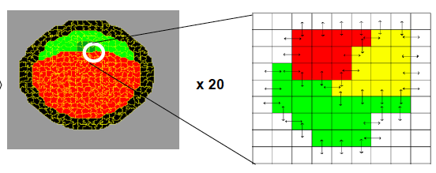
Cellular Potts Model on-lattice space.
Off-Lattice Models with One Particle per Cell
One of our early experiments of single-particle cell models exploring the biomechanics of the MECAGEN project. Each cell is represented by a small sphere and interacts with its nearest neighbors in a Delaunay tessellation through elastic forces (see Section 3.2).Video of single-particle cell division. This corresponds to Fig. .
In physics, the field of soft matter concerns the study of macromolecules, such as polymers, colloids, or gels, which generally have non-trivial emergent properties that cannot easily be predicted based purely on their atomic composition. Since the focus of soft matter physics is subcellular phenomena, some models make the choice a higher level of abstraction at which the mechanical properties of a cell and assemblies of cells can be more easily accounted for. Here, the system is typically composed of a 2D or 3D irregular network, whose vertices represent cells and edges interactions (e.g. adhesion) between cells. This is the framework that we eventually adopted in our own study (Fig. and Movie ; see Section 3.2), after having experimented with multiparticle systems (see next). An early example of single-particle cell model in a 2D culture was proposed by Dirk Drasdo in 1995 : it included visco-elastic and classical attraction-repulsion potentials, and was simulated by a Monte-Carlo method. Another 3D model of cell movement in multicellular systems, with net propulsion force (without reaction), surface approximation, and ellipsoidal particles can be found in . Meyer-Hermann et al. have designed an agent-based and force-based Delaunay-Object-Dynamics framework in which neighborhoods are derived from a weighted Delaunay triangulation optionally calculated in parallel , and volumes are conserved by a pressure force. This is very similar to what we use in our own model as it will be explained in Section 3.2. They apply it to models of avascular tumor growth and morphogenesis of lymphoid follicles , epidermal homeostasis , and cell migration with contractile ring along the migration axis . Multicellular migration can also be simulated by combining elastic forces and migration forces , assuming that a qualitative distinction can be schematically made between passive and active forces as it is the case in our study (Section 3.2).
Off-Lattice Models with Multiple Particles per Cell
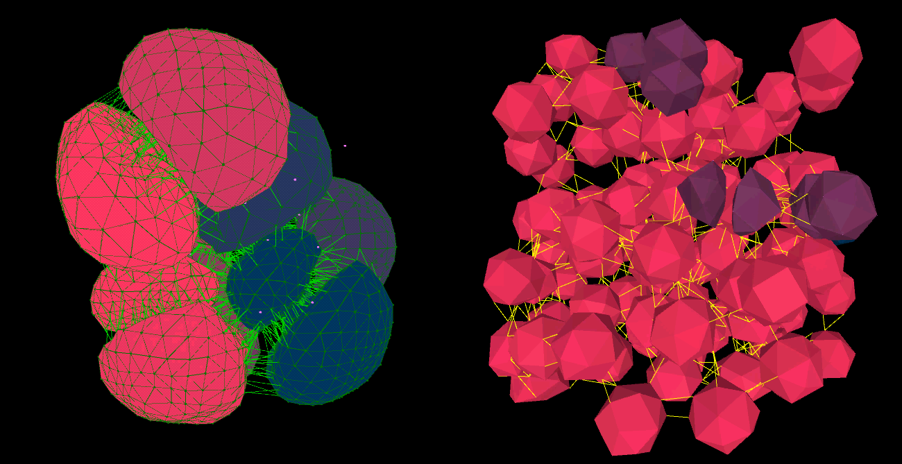
Two of our early experiments of multiparticle cell models exploring the biomechanics of the MECAGEN project. Left: Each cell is a sac filled with a great number of subcellular elements, appearing as vertices of a triangular mesh on the cell membrane. Green edges schematize intercellular adhesion forces (Movie ). Right: Similar experiment with simpler empty polyhedric cells.Video of multiparticle cell division and growth. This corresponds to Fig. , Left.
More detailed and complex models have chosen to preserve the fine grain of subcellular particles, as in the cellular Potts paradigm but in quasi-continuous space without a discrete grid support. Two major categories can be identified in this family: vertex-based junction networks and the Subcellular Element Model (ScEM). It is also worth noting tensegrity structures, composed of compression-bearing rigid elements (rods) isolated from each other and connected by a network of tensioned cables (springs)—an engineering and architectural concept used in abstract models of the cytoskeleton, notably by Donald Ingber . Although the properties of one tensegrity structure can well represent the flexibility and resilience of a single cell, it is difficult to aggregate and link several of these together, thus there are virtually no models of multicellular tensegrity-based tissues or organisms.
Vertex-based junction networks
In this category, cells are represented only by their membrane, which is generally formatted as a triangular mesh of vertices, but are not filled with other elements. The advantage is an explicit surface description of cell shapes, however it makes large-scale multicellular motion and rearrangement more difficult to simulate. A precursor computer simulation based on this idea was due to Odell et al. in 1981 . It was designed as a 2D model of epithelial folding and invagination to test hypotheses about the mechanical properties of cells. Cytoskeletal microfilaments form a cuboidal structure whose apical facet is contractile. Neighbor cells are laterally connected so that the contraction of the apical facet creates an invagination in the tissue. The contraction is triggered by a mechanical signal (stretching) that propagates along the aligned cells. Another notable attempt to model multicellular development as a growing 2D tiling of polygonal cells (possibly projected on a sphere) was presented by Weliky et al. in 1990 . It is one of the rare works to include cell protrusion and intercalation mechanisms (by extension of one node and inhibition of the others) with a rule to merge vertices when cell shapes change. They illustrate their system on the rearrangement of the enveloping layer during epiboly of the Fundulus, and convergence-extension in the Xenopus notochord . The same type of network can support simpler models of cell division patterns in a growing epithelial packing, where cell rearrangement is only due to growth and not to protrusion or migration . Vertex-based junction networks have also been variously employed in meristematic growth in plants (Arabidopsis) based on a global energy term including internal pressure and wall stiffness, the mouse blastocyst (a spherical embryo with an inner cavity) , the ascidian endoderm invagination by a two-step mechanism (apical contraction, then collared rounding of the cells) and multipoint curved edges between vertices , and the wing imaginal disc of Drosophila.
Subcellular Element Model (ScEM)
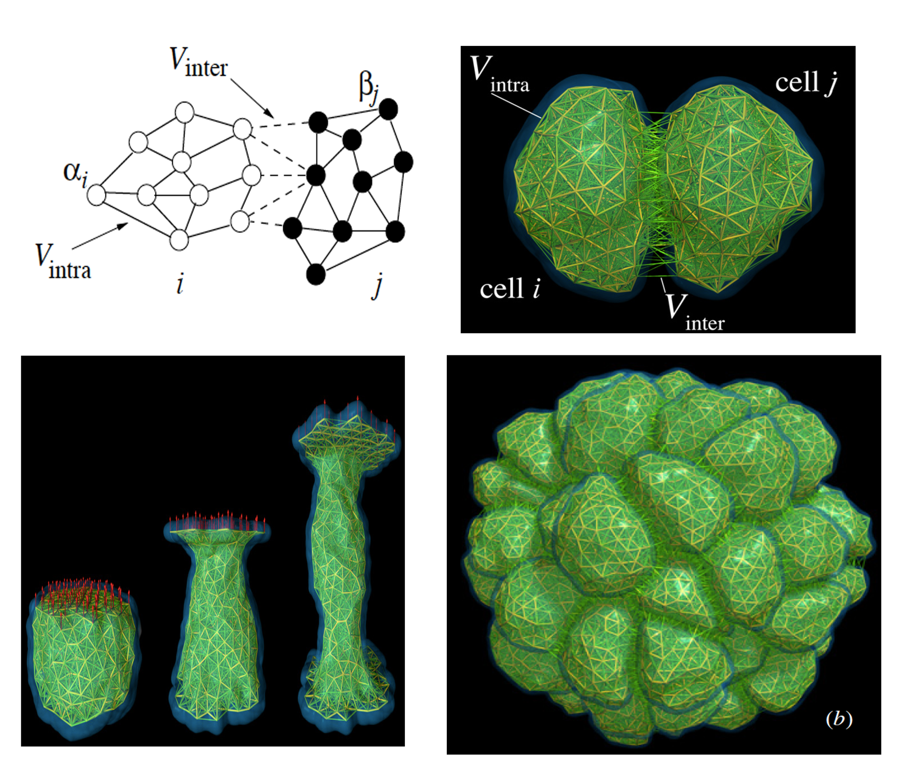
Illustrations of the Subcellular Element Model (ScEM). Top left: Schematic diagram showing two cells, \(i\) and \(j\), and a subset of the intra- (solid lines) and intercellular (dashed lines) interactions between their sub-elements (open circles in \(i\), filled circles in \(j\)). Image and caption adapted from . Top Right: Visualization of two interacting cells simulated using the ScEM and comprising about 500 elements each. Image and caption from . Bottom left: Visualization of an ScEM simulation of a single cell being stretched by a constant unilateral applied force. Image and caption from . Bottom right: A spherical cluster of about 110 cells with about 370 elements per cell. Image and caption from .
ScEM was introduced by Newman in 2005 . In this model, 3D cells are composed of multiple subcellular elements (typically a few hundred for a small number of cells, and a few dozen for thousands of cells ). The interaction rules among these elements are similar to the cell-cell interactions of the single-particle models at a lower scale. The interest of this approach is mainly that cell shapes and their dynamics are emergent properties of the underlying particles, both on the surface and in the interior of the cells (see review in ). The visco-elastic properties of ScEM were tested in rheological experiments by applying stress on putty-like bulk material (Fig. , bottom left), then used in a study of collective migration in the primitive streak formation in the chick embryo , and epithelial behavior in various species .
Review literature
John L. Semple, Nicholis Woolridge, and Charles J. Lumsden, 2005. In vitro, in vivo, in silico: computational systems in tissue engineering and regenerative medicine. Tissue engineering, 11(3-4), pp.341–356.
Matthew A. Wyczalkowski, Zi Chen, Benjamen A. Filas, Victor D. Varner and Larry A. Taber, 2012. Computational models for mechanics of morphogenesis. Birth Defects Research Part C: Embryo Today: Reviews, 96(2), pp.132–152.
Andreea Robua, Roxana Aldeab, Oana Munteanuc, Monica Neaguc, Lacramioara Stoicu-Tivadara, Adrian Neagu, 2012. Computer simulations of in vitro morphogenesis. Biosystems, 109(3), pp.430–443.
3.1.2. Particle-Based Physics
In particle-based physics models, each element of matter is represented by a particle. A great number of particles put together represent a higher level entity, such as a cell. The mechanical properties of the system are given by the parameters of the interaction potential between neighboring particles. When designing a particle-based model, two main question must be addressed: (a) How are the space and the objects it contains divided into particles (spatial neigborhoods)? (b) How is the motion of particles related to their mechanical properties (attraction-repulsion potential)?
Spatial Neighborhoods
Equations ruling a particle system's dynamics are based on a double sum over all particles \(i\) and their neighbors \(j \in \mathcal{N}_i\). This section describes the different types of neighborhoods that can be defined. In off-lattice simulations, particles are free to move to any coordinates in the 3D Euclidian space \(\mathbb{R}^{3}\). Thus neighborhoods are not implicit as they are on a grid, and an algorithm is needed to explicitly identify neighboring particles. We denote by \(P\) the swarm of \(n\) particles \(i\) at positions \(\vec{X}_i = (x_i, y_i, z_i)\).
All to All Neighborhoods
In the simplest, but most computationally expensive case every particle is connected to all the others, creating \(n(n-1)/2\) bidirectional links in the swarm \(P\).
In the metric case, the intensity of the interaction between particles decreases when their distance increases. At some point, it may even be neglected with respect to interactions with closer particles. Thus by choosing a threshold, a definition can be that two particles are considered neighbors if and only if they interact with an intensity above that threshold. In other terms, it is as if each particle generated a local field of interaction potential with limited scope. In this case, the neighborhood matrix can be much sparser, for example:
In its simplest form, this locality principle may be captured by a intrinsic size parameter \(s\), applied to all particles of \(P\): the local domain is then defined by a sphere of radius \(f(s)\). In Euclidean space, it means that
$$\left\|\vec{X}_i - \vec{X}_j\right\| \leq f(s)$$
If particles have spheroidal shapes, an intrinsic radius parameter \(r_i\) can be associated to each particle \(i\), in which case the metric criteria reads
$$\left\|\vec{X}_i - \vec{X}_j\right\| \leq f(r_i,r_j)$$
More complex metric criteria may be considered if more than one intrinsic parameter is associated with each particle (e.g. ellipsoidal shapes).
Topological Neighborhoods: Voronoi Diagram
In other models, distance-based criteria are not sufficient. This is the case when a spheroidal approximation is not appropriate or a particle represents a physical domain of space that cannot be neglected compared to the size of the particle's local interaction field. Denoting \(\phi\) the ratio of the physical volume of particle \(i\) over the volume of its local interaction field, we can state that (a) for planets and their gravitation field, or atoms and their electrostatic potential, \(\phi\) tends to 0; while (b) for objects that interact via their contact surface, as is the case in multicellular systems composing living tissue, then \(\phi\) is much closer to 1 (Fig. ).
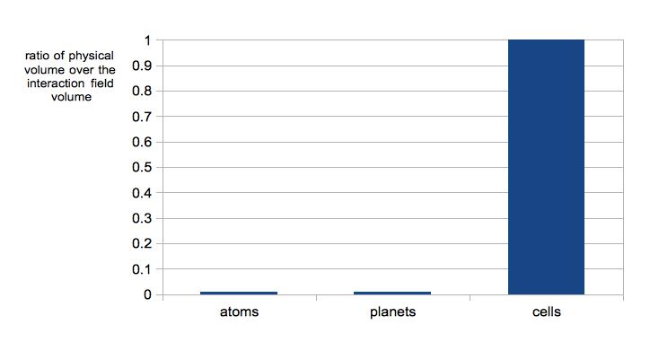
Ratio of the physical volume of a particle over the volume of its local interaction field. Atoms and planet have an interaction range that is much larger that their physical envelope whereas cells can only mechanically interact by physically touching their neighbors.
In high-\(\phi\) systems, different criteria must define more specifically what part of the space is occupied by the object associated with the particle. For systems where objects are densely packed against each other, a Voronoi diagram of the swarm, \(V(P)\), is a convenient solution to determine a decomposition of the space into convex polyhedra \(V(i)\) (called Voronoi cells), one per particle (Fig. ):
In \(\mathbb{R}^3\), a Voronoi cell is delimited by Voronoi facets that contain all points equidistant from two neighboring cells. A Voronoi edge is shared by three Voronoi cells and a Voronoi vertex is shared by four Voronoi cells. Certain degenerate configurations of particles in a swarm perturbs a proper Voronoi diagram construction, for example: three colinear particles, four particles on a circle, or five particles on a common sphere. In inherently stochastic systems with real-valued coordinates, however, these conjunctions have a next to nil probability to occur. Finally, a few Voronoi cells at the periphery of the swarm have an open volume in \(\mathbb{R}^3\). They share open facets and edges among each other and form the outer shape of the swarm called convex hull.
Dual of the Voronoi Diagram: Delaunay Triangulation
From the Voronoi diagram, a fundamental neighborhood rule in computational geometry can be deduced: the Delaunay triangulation. When the elements of the Voronoi diagram are polyhedra, the edges that link each center of mass of adjacent polyhedra constitute the dual of the Voronoi diagram—and vice-versa. One can be deduced deterministically from the other (Fig. ).
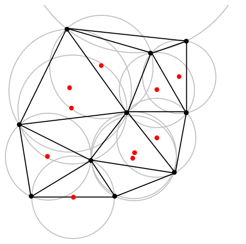
A Delaunay triangulation in the 2D plane. Black dots are the particles, black lines their Delaunay neighborhood links, and red dots the circumcircles' centers. No circumcircle contains a particle in its interior. Image from http://en.wikipedia.org/wiki/Delaunay_triangulation
The process of cutting out space with geometric shapes leaving no overlaps or holes is called tessellation. Most of the time, cells remain in contact, each polyhedron's face is shared by two neighboring cells. Sometimes, however, holes may appear or disappear as cells move during embryogenesis. These holes can be construed as empty polyhedra, therefore we will continue using the term tessellation anyway.
Attraction/Repulsion Potential
All particle-based models' interaction potentials share common features: repulsion at short distance, until a certain equilibrium distance \(r^{\mathrm{eq}}\), and attraction beyond, until the border of the interaction field, whether it is finite or not.
Equilibrium Distance
Two different characterization of equilibrium distances can co-exist: (a) equilibrium distances can be implicitly obtained by the relaxed state of the dynamical system, which is a function of its physical properties (elasticity, adhesion, etc.), (b) they can be explicitly specified by geometric calculus.
Implicit Equilibrium Distance
As soon as two cells touch each other, adhesive forces at their surface tend to increase the contact area until inner resistance compensate them completely. This implicitly defines an equilibrium surface. The most influential field of research for describing this phenomenon is called contact mechanics. Initiated by the articles of Heinrich R. Hertz entitled On the contact of elastic solids (1881) and On the Contact of Rigid Elastic Solids and on Hardness (1882), contact mechanics successfully characterized the deformation of two elastic bodies that touch each other as a function of the load applied to them and their mechanical properties. Originally, Hertz only described the non-adhesive surface case but two concurrent models, Johnson-Kendall-Roberts (JKR) and Derjaguin-Muller-Toporov (DMT) , later added adhesion-related terms to the equation, each one performing better on different materials.
For example, if two elastic sphere with elastic modulii \(E_i\) and \(E_j\), Poisson's ratios \(\nu_i\) and \(\nu_j\) and radii \(R_i\) and \(R_j\), their contact is a circle of radius \(a\). The JKR model establishes a relation between load \(F_{\mathrm{JKR}}\) and contact radius by:
As the shape of the deformation of the surface is assumed to be parabolic, the equilibrium distance between the two spheroid particle centers can also be inferred (Fig. ).
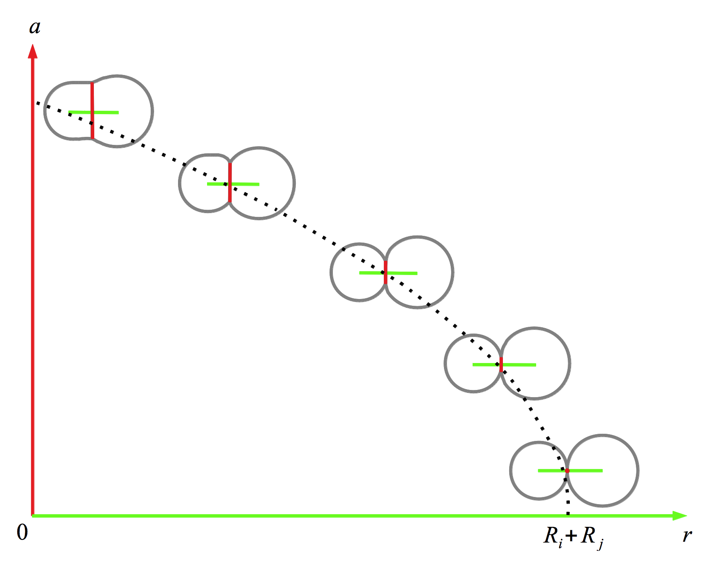
Typical profile of the contact radius as a function of the particles' distance in contact mechanics (with adhesion). In abscissa: distance between the particles; in ordinate: contact radius. As the adhesive energy increases or the elastic modulii decrease, the equilibrium contact surface area tends toward the upper left part of the curve.
These equations have already been used in multicellular modeling, but with additional hypotheses that are debatable (e.g. the original Hertz model and the JKR theory both assume that the deformation is small with respect to the radii of the spheres). Regarding our goal of modeling embryogenesis, a major drawback of contact mechanics is also that it was designed for two interacting spheroidal particles. For multiple particles touching each other, like cells, a contact surface area is surrounded by other contact surface areas, which greatly reduces the free surface.
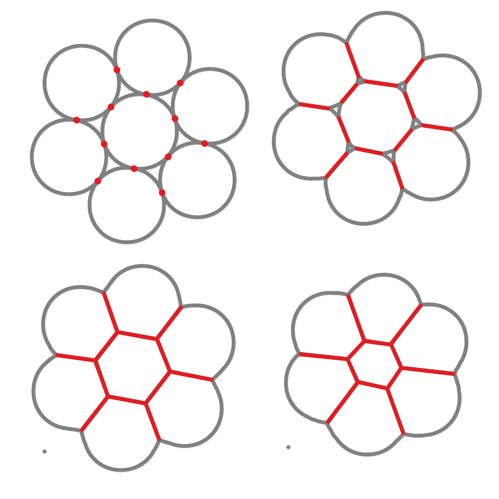
Multicellular limits of contact mechanics. As the adhesion energy increases, the contact surface areas become larger and the volume of the central cell is not conserved (bottom right). Contact mechanics does not deal well with multiple surfaces of contact when triple junction points appear (from top right to bottom).
A particular problem is that cellular volume tends to decrease when interfacial tension increases (Fig. ). This unfortunately defeats the refined characterization of the surface area equilibrium by models of contact mechanics. One possibility to counterbalance this tendency is to add a volume conservation term, but the outcome is also a serious perturbation of the contact mechanics framework.
In sum, the trouble with the particle-based framework is that the main variables are the coordinates \(\vec{X}_i\) of the centers of the particles, and there is no explicit usage of surface areas, for example in the Voronoi calculation. The pair-based framework of neighboring particles does not allow to design more adapted models. Instead of making a pair of particle the generic case and a tuple of particles the exception, we need to do the opposite.
3.2. Hypotheses
This section explains how we express and calculate the mechanical interactions and behavioral properties of the cells. It presents a discrete-element model using one particle per cell, driven by an overdamped equation of motion that can be summarily written \(\lambda \vec{v_i} = \vec{F}^P_i+\vec{F}^{A,\mathrm{int}}_i+\vec{F}^{A,\mathrm{ext}}_i\) (Section 3.2.1), where \(\vec{v_i}\) is the velocity of one cell \(i\), \(\vec{F}^P_i\) represents passive interaction forces controlling cell stiffness and adhesion, and \(\vec{F}^{A,\mathrm{int}}_i\) and \(\vec{F}^{A,\mathrm{ext}}_i\) are the intrinsic and extrinsic components of active interaction forces such as protrusive activity or apical constriction. These forces are calculated by summing over a neighborhood \(\mathcal{N}_i\) containing nearby cells that are in contact with cell \(i\). This neighborhood is itself defined by metric and topological criteria (Section 3.2.2). \(\vec{F}^P_i\) is a relaxation force derived from an attractive/repulsive, elastic-like interaction potential (Section 3.2.3), while \(\vec{F}^{A,\mathrm{int}}_i\) and \(\vec{F}^{A,\mathrm{ext}}_i\) compose a behavioral force moving the swarm configuration away from equilibrium (Section 3.2.4).
3.2.1. Generic Cell-Centered Equation of Motion
The equation of motion is the core of every mechanical model. It relates the spatial variables of the model and time through hypothesized laws that reflect our understanding of the properties of the studied phenomenon. In classical mechanics, which describes the world of rigid bodies at a macroscopic scale, Newton's three laws of motion (inertia, acceleration, and action/reaction) constitute the fundamental principles upon which equations of motion are built. In a biomechanical system such as multicellular embryogenesis, however, a modification of these laws is necessary to adapt them to different objects and environments: soft bodies and high viscosity at a near-molecular scale. This section explains our proposal of simplified equations of local cell motion, derived from classical mechanics, in the perspective of applying them to the agent-based modeling and computational simulation of biological development.
Newton's second law states that the acceleration \(\vec{a}\) of a body is proportional to the sum of the forces \(\vec{F}\) applied to it. The proportionality factor is the inverse of the mass of the body, a quantity assumed to remain constant over time: \(\vec{a} = \vec{F}/m\). In particle-based physics, for each particle characterized by a mass \(m\), acceleration \(\vec{a}\), location \(\vec{X}\), velocity \(\vec{v}\), and radius \(R\), forces are a function of the last three quantities, and Newton's law reads
$$m \vec{a} = \vec{F}(\vec{X}, \vec{v}, R).$$
At the scale of the biochemical world, however, this classical formulation does not reflect the emergent and rather counterintuitive phenomena that cells exhibit individually and collectively. In fact, cells are so small and their interactions so sticky that the physics of their motion is radically different from the one to which we are accustomed at our scale. The main difference resides in the disappearance of inertial forces. In his article Life at low Reynolds number, Purcell explains how a cell immersed in water stops moving as soon as he stops pushing it. The cell, an E. Coli bacteria, is so tiny that the viscous forces exerted by the surrounding water completely overwhelm the inertial forces due to motion.
More precisely, when an object of characteristic length \(R\) moves at a velocity \(v = ||\vec{v}||\) in a fluid of density \(\rho\) and dynamic viscosity \(\mu\), the quantity that measures the ratio of the inertial forces to the viscous forces is called the Reynolds number and denoted by \(\mathrm{Re}\). Its expression is
$$\mathrm{Re} = \frac{\rho v R}{\mu}$$
where ratio \(\mu/\rho\) is the kinematic viscosity, denoted by \(\nu\), and has a value of \(10^{-6} {m}^2 {s}^{-1}\) for water. For a person of characteristic length \(1m\) swimming at \(1 m s^{-1}\), \(\mathrm{Re}\) is of the order of \(10^6\). For a bacterium of characteristic length \(10^{-6} m\) swimming at \(10^{-5} m s^{-1}\), \(\mathrm{Re}\) is around \(10^{-5}\). Therefore, the physics of inertia and viscosity is completely different for these two examples. The balance shifts from inertial forces on a person to the viscosity forces on a cell.
A more striking example is the coasting distance of the same bacterium when it stops self-propulsing in water. When only inertial and viscous forces are at work, Newton's second law becomes
which, integrated from \(t=0\) to \(t=\infty\) yields the coasting distance \(d\) of the bacterium:
$$d = \frac{v_0 m}{\gamma_{drag}}.$$
For a bacterium swimming at \(10^{-5} m s^{-1}\), this distance is \(0.1\) angstrom. Thus a simple calculation confirms that if the bacterium is not moving by itself or pushed by an external actor, it immediately stops moving. Purcell's interpretation of these results is that If you are at very low Reynolds number, what you are doing at the moment is entirely determined by the forces that are exerted on you at the moment, and by nothing in the past.
The consequence is that in a low Reynolds number environment, applied forces produce a velocity, not an acceleration. The displacement is proportional to the instantaneous force and inversely proportional to the a damping coefficient \(\lambda\). Therefore, these results allow to bypass Newton's Second Law and we use the following modified equation of motion in our model:
$$\lambda \vec{v} = \vec{F}$$
The above discussion assumed a solid object moving in a fluid flow. In a multicellular environment such as a developing organism, we assume that the same principles apply for the following reasons:
the dimension of cells are roughly similar to a bacterium (from 300 microns for the zygote to 0.3 micron at the 1024-cell stage, and 0.02 micron when the embryo contains about 15,000 cells)
the density is equivalent
the kinematic viscosity of the surrounding cells taken as a flow can be considered even greater than water; for example, at 18°C, the kinematic viscosity of ketchup is 50,000 times higher than water (see , Appendix 2 for a similar justification)
Generalizing to a multicellular system, the motion of each cell indexed by \(i\) is governed by its interactions with all other cells \(j\) belonging to its neighborhood denoted by \(\mathcal{N}_i\), according to
A crucial difference with a solid object, however, is that surrounding cells are responsible not only for damping the motion but also for the motion itself. There is no hand pushing the cell, as in Purcell's experiment: the pushing is exerted the cells' intrinsic behavior and, to progress, it needs to cling and push back surrounding cells a bit like a swimmer pushes back water to move forward. Accordingly, the interaction force \(\vec{F}_{ij}\) exerted by cell \(j\) over cell \(i\) is the sum of three components:
a passive interaction force \(\vec{F}^P_{ij}\), which maintains the integrity of the cell's volume and controls both the stiffness and the adhesion of the interaction; this force always applies irrespective of the state of the cell but can be modulated via the stiffness and adhesion components (explained in Section 3.2.3)
an intrinsic active interaction force \(\vec{F}^{A,\mathrm{int}}_{ij}\), which gives rise to specific behaviors such as protrusive activity or apical constriction; this force depends on the state of cell \(i\), in particular vanishes when the cell is resting, and
an extrinsic active interaction force \(\vec{F}^{A,\mathrm{ext}}_{ij}\) induced by the intrinsic force \(\vec{F}^{A,\mathrm{int}}_{ji}\) of neighbor cell \(j\), i.e. both forces are equal but have opposite directions: \(\vec{F}^{A,\mathrm{int}}_{ij}\!= - \vec{F}^{A,\mathrm{ext}}_{ji}\) (both explained in Section 3.2.4).
Moreover, the damping coefficient \(\lambda_i\), which plays here a role somewhat equivalent to the mass \(m_i\) in Newton's Second Law, is proportional to the surface of the cell: \(\lambda_i = \lambda_0 {R_i}^2\). Neglecting the cell's weight (proportional to \(m_i\)), the final equation then reads
The following sections will describe in more detail how the neighbors \(\mathcal{N}_i\) of each cell \(i\) are identified (Section 3.2.2), and then how the forces coming from neighboring cells \(j\) will be calculated.
3.2.2. Cell Neighborhood
A cell sustains forces exerted by the cells in contact with it. While the notion of contact is straightforward in certain paradigms (such as cellular Potts, see Section 3.1.1), in a model as abstract as the particle-based model that we rely on, a custom neighborhood algorithm must be designed. At any time step, the only information that we have about the spatial structure of swarm \(S\) is that each one of its cells, represented by a spheroidal particle \(i\), is characterized by a location \(\vec{X}_i = (x_i,y_i,z_i)\) and a volume \(V_i\) (Fig. , left). The objective of this section is to infer from these intrinsic parameters the neighborhood links and contact surface areas between cells (resp. the black and red edges in Fig. , right). To this aim, we present a two-step strategy: first, a preselection of potential neighbors that obey certain metric criteria, then a refinement of this list according to topological features.
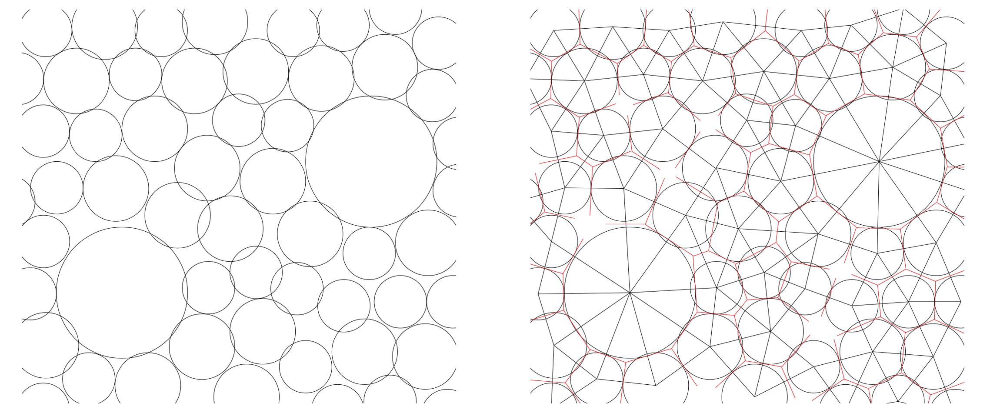
Output of the neighborhood algorithm. Left: A 2D swarm of cells characterized by various given positions and radii. Right: The neighborhood links (black edges) and contact surface areas (red edges) between cells calculated by the method described in this section.
The regular Delaunay triangulation would be in many ways the most adapted method, as it establishes a list of neighbors according to topological criteria that can also be weighted by each particle's size. However, it has the major drawback of being very computationally expensive. Since we rely on a GPGPU architecture (general-purpose graphics processing units, see Annex A) for our simulations and, to our knowledge, there exists no parallel implementation of regular triangulation yet, we have designed a custom algorithmic flow instead. The goal of our neighborhood algorithm is to produce the most topologically plausible structure (a comparison with the regular triangulation is provided at the end of this section). Our method iteratively builds two lists of neighbor cells: the first list \(\mathcal{N}^m_i\) is based on metric criteria and then it is filtered by topological criteria to produce the second list \(\mathcal{N}^t_i\).
First Approximation: Metric Neighborhood
Two cells of radius \(R_i\), \(R_j\) and locations \(\vec{X}_i\), \(\vec{X}_j\) are considered to be neighbors according to a metric criterion if and only if their relative distance is less than the sum of their radii \(R_i + R_j\) multiplied by a constant factor \(c_{\mathrm{max}}\). Thus the metric neighborhood set of cell \(i\) is defined as follows:
We denote the distance between the two cells by \(r_{ij} = \left\|\vec{X}_i - \vec{X}_j\right\|\) and the cutoff value \(r^{\mathrm{max}}_{ij} = c_{\mathrm{max}}(R_i+R_j)\) so that, equivalently, \(j\) is a metric neighbor of \(i\) if and only if \(r_{ij} \leq r^{\mathrm{max}}_{ij}\). Although cells are considered spheroidal here, we add the possibility for them to deform in order to reach farther away neighbor cells. Radius \(r^{\mathrm{max}}_{ij}\) sets the maximum distance of this deformation, i.e. the spherical domain of space inside which cells can still potentially interact (Fig. ).
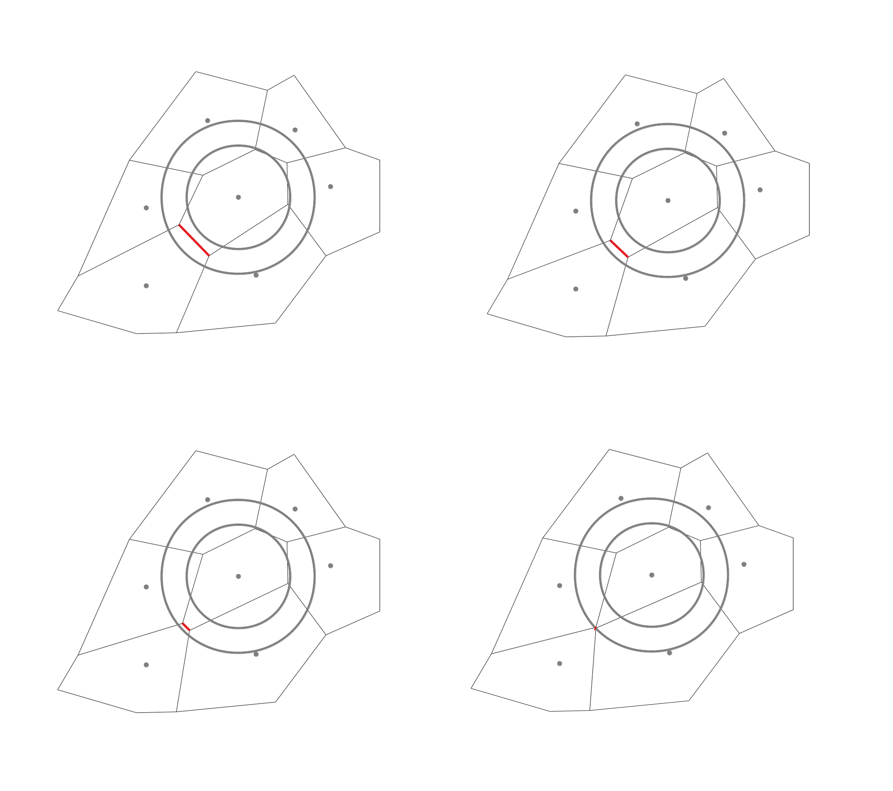
Schema of the particle-cell and its maximum distance of deformation. The smaller circle gives the radius of the spherical cell and the larger circle gives the maximum distance of deformation.
Our next step will be to evaluate \(c_{\mathrm{max}}\). For this, we establish an empirical law relating the distance \(r_{ij}\) between two cells \(i\) and \(j\) to their contact surface area, denoted by \(A_{ij}\), such that at the cutoff point \(r_{ij} = r^{\mathrm{max}}_{ij}\), \(A_{ij}\) is zero.
Empirical Estimation of the Contact Surface Areas
In the absence of real biological data, we construct here an artificial testbed experiment based on the weighted Delaunay triangulation to infer an approximate relationship between cellular distances and contact surface areas. We will then generalize and apply this law to our multicellular model of embryogenesis. In the present experiment, an ellipsoidal domain of space is filled with three consecutive generations of cell division \(g_1\), \(g_2\), \(g_3\) in equal quantities. Their volumes are respectively \(V_{g_1}\), \(V_{g_2} = (0.5) V_{g_1}\), and \(V_{g_3} = \left( 0.5 \right)^{2} V_{g_1}\). All cells are considered spheroidal, and their average radii are \(R_{g_1}\), \(R_{g_2} = \left( 0.5 \right)^{1/3} R_{g_1}\), \(R_{g_3} = \left( 0.5 \right)^{2/3} R_{g_1}\). These radii are the coefficients used in the weighted Delaunay triangulation. The number \(N\) of cells per generation is adjusted so that the volume of the ellipsoid container is fully occupied by the \(3N\) cells packed together. Then the ellipsoid is deformed, forcing the cells into various spatial rearrangements (Fig. and Movie ). Deformation happens by making the first semi-principal axis of the ellipsoid oscillate between two extreme values in a sine motion, while the second axis remains constant and the third axis is adjusted so that the volume of the ellipsoid remains constant.
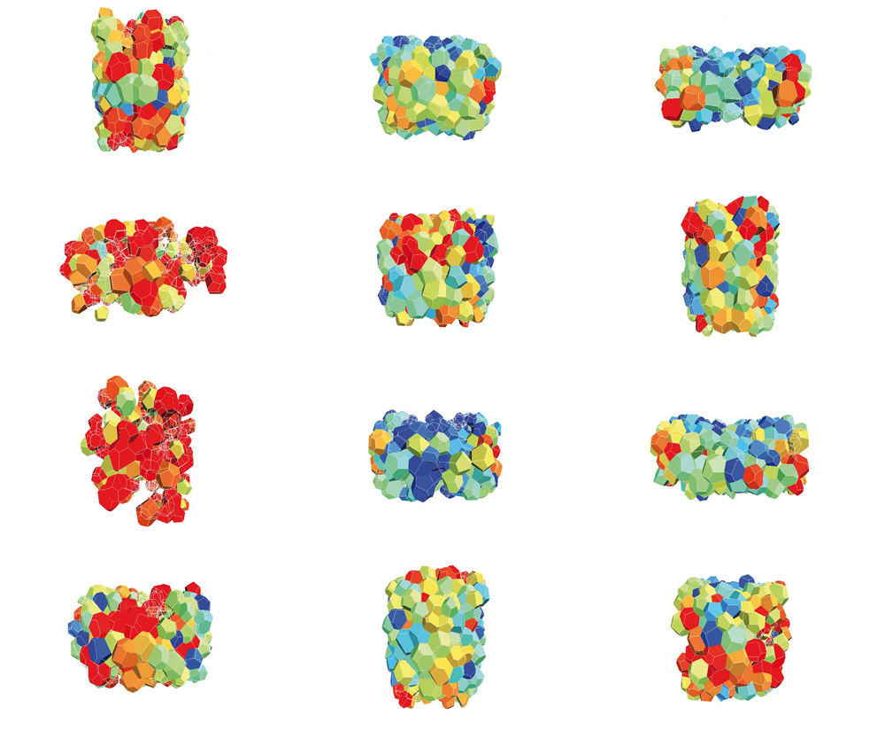
Estimation of the contact surface area in a weighted Delaunay/Voronoi simulation. An ellipsoid filled with 300 cells is artificially deformed (stretched and compressed) to generate various distance-surface measurement pairs. Blue cells indicate local compression (i.e. weighted Voronoi volume less than theoretical volume), red cells indicate local dilation.Estimation of the contact surface area in a weighted Delaunay/Voronoi simulation. An ellipsoid filled with 300 cells is artificially deformed (stretched and compressed) to generate various distance-surface measurement pairs. Blue cells indicate local compression (i.e. weighted Voronoi volume less than theoretical volume), red cells indicate local dilation.
Fig. shows the Voronoi volumes in the interior of the ellipsoid only, i.e. the ones not in contact with the convex hull of the cell pack. The color code represents the normalized difference between the theoretical volume of the cell (specified by its radius) and the observed volume of the cell among its neighbors (specified by weighted Delaunay/Voronoi): \(c = V_{\mathrm{obs}}/V_{\mathrm{theo}} - 1\). The lower and more negative the difference (i.e. compressed neighborhood), the closer to blue; the higher and more positive (i.e. dilated neighborhood), the closer to red. In the middle of the distribution, greenish cells correspond to a small \(|c|\) ratio (less than 5%) and are considered to be in a valid spatial configuration. When two such valid cells \(i,j\) are in contact, the pair of values composed of their distance \(r_{ij}\) and their contact surface area \(A_{ij}\) is stored to contribute to the empirical data.
We index by \(g\) an experiment that uses a set of \(3N\) cells from generations \(g_1=g\), \(g_2=g+1\) and \(g_3=g+2\). Each experiment \(g\) produces 6 sets of pairs \(\{(r_{ij}, A_{ij})\}_{(i,j)\in g'\times g''}\) depending on the types \((g',g'')\) of adjacent cells \((i,j)\), where \((g',g'') = (g_1,g_1)\), \((g_1,g_2)\), \((g_1,g_3)\), \((g_2,g_2)\), \((g_2,g_3)\), or \((g_3,g_3)\). We carried out 6 experiments corresponding to \(g = 9,10,...,14\), representing roughly the zebrafish division stages in which three consecutive generations can effectively be mixed. Thus we produced a total of 36 experimental plots, each one containing about 10,000 points, in the \(\{(r, A)\}\) plane. Fig. shows one of these plots when \((g,g',g'')=(9,10,11)\).
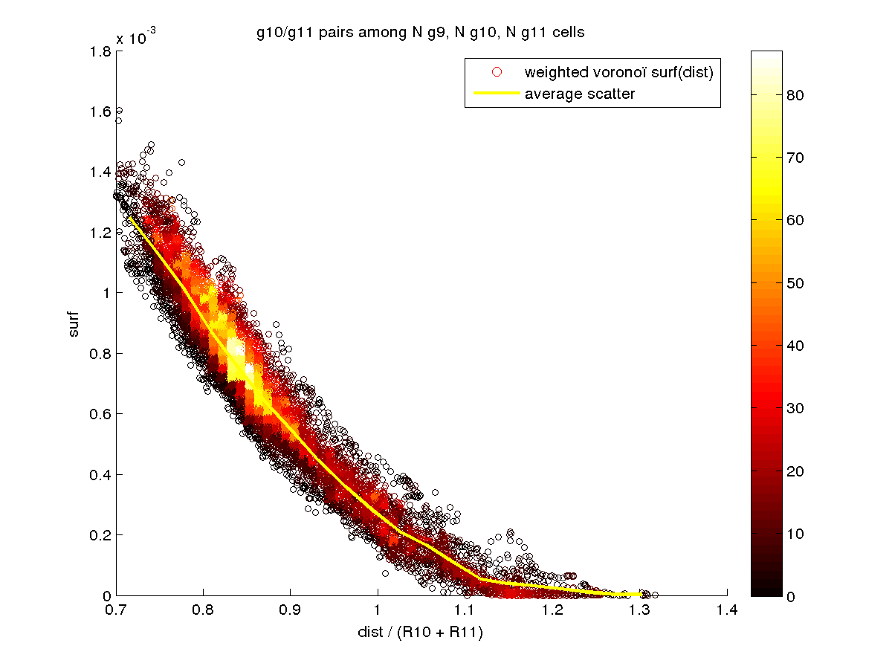
Scatter plot of the contact surface area between neighboring Voronoi domains as a function of the distance between their centers. Each dot is a surface-distance pair of values obtained from two neighbors according to the weighted Voronoi algorithm. The color map reflects the density in plot space (white for highest density). The central yellow curve is the regression of the distribution (segmented curve calculated at discrete distance intervals).
A first observation is that, as expected, most distances \(r_{ij}\) are lower than \(R_i+R_j\) (i.e. points are to the left of a vertical line passing through 1). Now we use a parabola for the shape of the empirical curve that will be fitted to this data:
We decided to use a monomial of degree 2 to make it scale like a surface. If the distance between two double-size neighboring cells is doubled, the area of the surface of contact will quadruple.
$$A(2r_{ij},2R_i,2R_j) = 4 A(r_{ij},R_i,R_j)$$
Finally, to distill the optimal pair of parameters \((a, c_{\mathrm{max}})\) from these data plots, we measure the discrepancy between the generated data and the empirical law based on the sum of squared errors of prediction (SSE), denoted by \(E\):
We performed an exhaustive exploration of all the pairs of parameters \((a,c_{\mathrm{max}})\) until the 4th decimal to look for the lowest \(E\) value. A heatmap of this search can be visualized in Fig. .
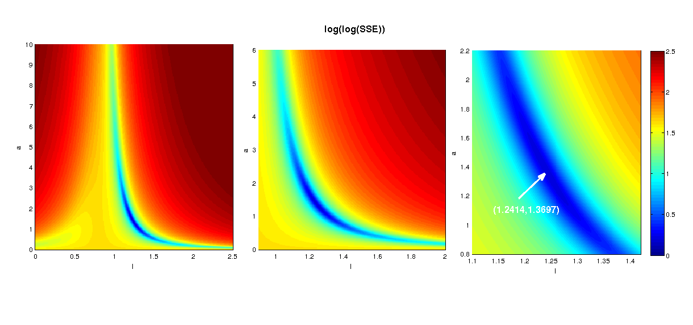
Heat map of the sum of squared errors of prediction (SSE) for various pairs of parameters \((a,c_{\mathrm{max}})\). Blue regions indicate the best fitness domains, with point \((a=1.3697 , c_{\mathrm{max}}=1.2414)\) representing the absolute best fit. In abscissa: \(c_{\mathrm{max}}\); in ordinate: \(a\); in color: \(\log(\log(\mathrm{SSE}))\) to accentuate the contrast.
In conclusion, we found that the best pair of values was \((a=1.3697 , c_{\mathrm{max}}=1.2414)\) and will use them throughout our simulations. A comparison of this empirical law with the generated data is shown in on a selection of 6 different plots out of the 36.
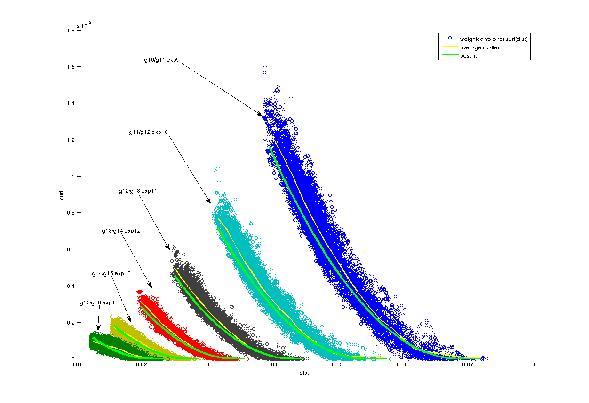
Comparison of the best fit with measures from various experiments.
Topological Refinement of the Metric Neighborhood
Now that we have estimated a numerical value for \(c_{\mathrm{max}}\), we can calculate each metric neighborhood \(\mathcal{N}^m_i\) according to its definition above (coefficient \(a\) will be used in the next section when we need to calculate the forces based on contact surface areas). As described in the state of the art, however, a purely metric neighborhood is not viable as it often leads to volumes collapsing during simulation when the adhesion between interacting cells is high. This is why in this section we are going to filter \(\mathcal{N}^m_i\) through topological criteria to obtain \(\mathcal{N}^t_i\).
The 3D Delaunay triangulation could do the job but is much too slow to compute because it involves heavy data structures composed of multiple tetraedra. Our own solution is inspired by a similar neighborhood model: the Gabriel graph. In 2D, whereas the Delaunay triangulation imposes that no node be found inside the circumcircle of any triangle, the Gabriel graph method imposes that no node be found inside the circle whose diameter is a valid neighborhood edge (Fig. ).
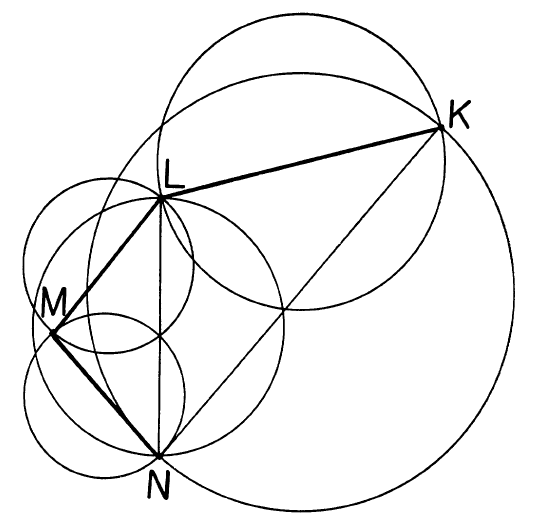
An example of Gabriel graph on four nodes K, L, M and N. Only edges KL, LM and MN are valid because the disks whose diameters are these edges do not contain any other node (whereas, for example, the disk based on LN contains node M).
Here, we propose to generalize the Gabriel criterion to the 3D case straightforwardly: two cells \((i, j)\) will be considered neighbors if no other cell \(k\) of the swarm is located inside the sphere whose diameter is the segment \(\overline{ij}\), i.e. with origin \((\vec{X}_i + \vec{X}_j)/2\) and diameter \(r_{ij}=\|\vec{X}_i - \vec{X}_j\|\):
To our knowledge, the term Gabriel graph has not been formally defined in 3D. However, when it happens to be mentioned , triangles are used instead of segments to define circumspheres. This makes sense, as in \(n\) dimensions, the Delaunay triangulation uses \(n\)-simplices for its basic units (triangles in 2D, tetrahedra in 3D) while the Gabriel graph uses \((n-1)\)-simplices (edges in 2D, triangles in 3D). Here, however, we will continue using edges in 3D while still referring to our method as a Gabriel graph. Note that in the 2D case, the Gabriel graph is a subgraph of the Delaunay triangulation. Every pair of neighbors in a Gabriel graph is also a pair of neighbors according to the Delaunay criteria (Fig. ).
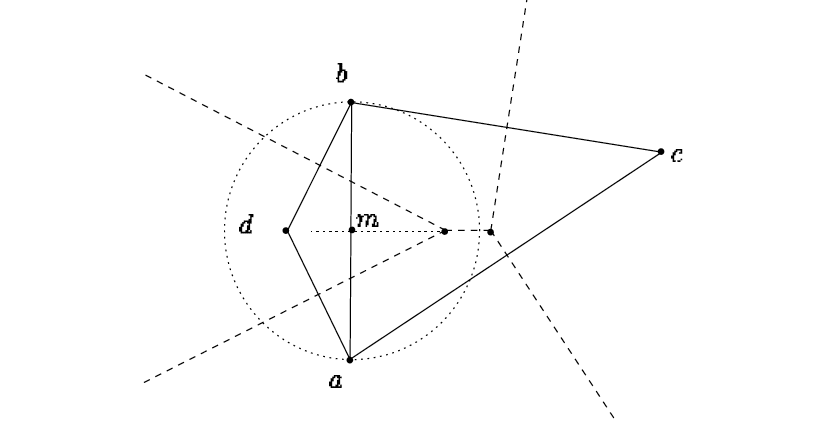
A 2D Gabriel graph is a subset of a Delaunay triangulation. Here, 5 solid lines represent the Delaunay edges. The Gabriel graph has only 4 of them because it excludes edge \(ab\). Visually, a Delaunay edge is also a Gabriel edge if it intersects the contact border (dashed lines) between the two cell domains (schema from )
3.2.3. Interaction Potential
As explained in Section 3.2.1 above, two neighboring spheroidal cells \(i,j\) of radii \(R_i\) and \(R_j\) separated by a distance \(r_{ij}\) interact in our model through forces \(\vec{F}_{ij}\) (exerted by \(j\) over \(i\)), which contain a passive relaxation term \(\vec{F}^P_{ij}\). The latter is derived from an attractive/repulsive interaction potential, leading the swarm of cells toward an equilibrium state in the absence of any other forces. As it will be explained below, the underlying rationale of this potential is to maximize the contact surface area between every neighboring cells in the swarm.
For every pair of neighboring particles \((i,j)\) we focus in this section on the passive interaction potential \({E}^P_{ij}\) from which \(\vec{F}^P_{ij}\) is derived, and model it from three juxtaposed domains:
a repulsion domain (decreasing \(E\)) at distances shorter than a certain equilibrium distance defined by \(r^{\mathrm{eq}}_{ij} = c^{\mathrm{eq}}_i R_i + c^{\mathrm{eq}}_j R_j\), where in the most general case \(c^{\mathrm{eq}}_i\) is a coefficient that can vary from cell to cell
an attraction domain (increasing \(E\)) at distances greater than \(r^{\mathrm{eq}}_{ij}\)
a neutral domain (constant \(E\)) beyond the maximum limit of the interaction field \(r^{\mathrm{max}}_{ij} = c_{\mathrm{max}}(R_i+R_j)\)
In the previous section, we established the value of the maximum distance \(r^{\mathrm{max}}_{ij}\), by estimating an average universal value for coefficient \(c_{\mathrm{max}}\) based on empirical stastitics of the contact surface areas between neighboring particles. Equipped with this rule, we then performed a two-step strategy of selection of the neighboring cells, which gave us the final topogical-metric neighborhood of \(i\), \(\mathcal{N}^t_i\).
Here, we want to calculate the relaxation forces \(\vec{F}^P_{ij}\), which are based on an estimation of the equilibrium coefficients \(c^{\mathrm{eq}}_i\). As reviewed in Section 3.1, the definition of the equilibrium distance can be stated either explicitly or implicitly. In the implicit case, for example in the most advanced models of contact mechanics, it results from a trade-off between different biomechanical properties. We showed, however, that these models ran against major difficulties when multicellular interactions are considered. Instead, we decide here to explicitly identify the distance of equilibrium between neighboring cells with the distance between their locations in the densest arrangement of sphere packing. We assume that intercellular material covers no significant volume (otherwise, additional particles representing the extra-cellular material would have to be added, which we do not do here).
In the 2D plane, the densest packing of identical disks is the hexagonal lattice (Fig. ). The ratio of the surface occupied by the disks to the surface containing the disks is equal to the ratio of the surface of a disk to the surface of an hexagon (its Voronoi domain), i.e. \(\pi/(2\sqrt{3}) \simeq 0.9068997...\).
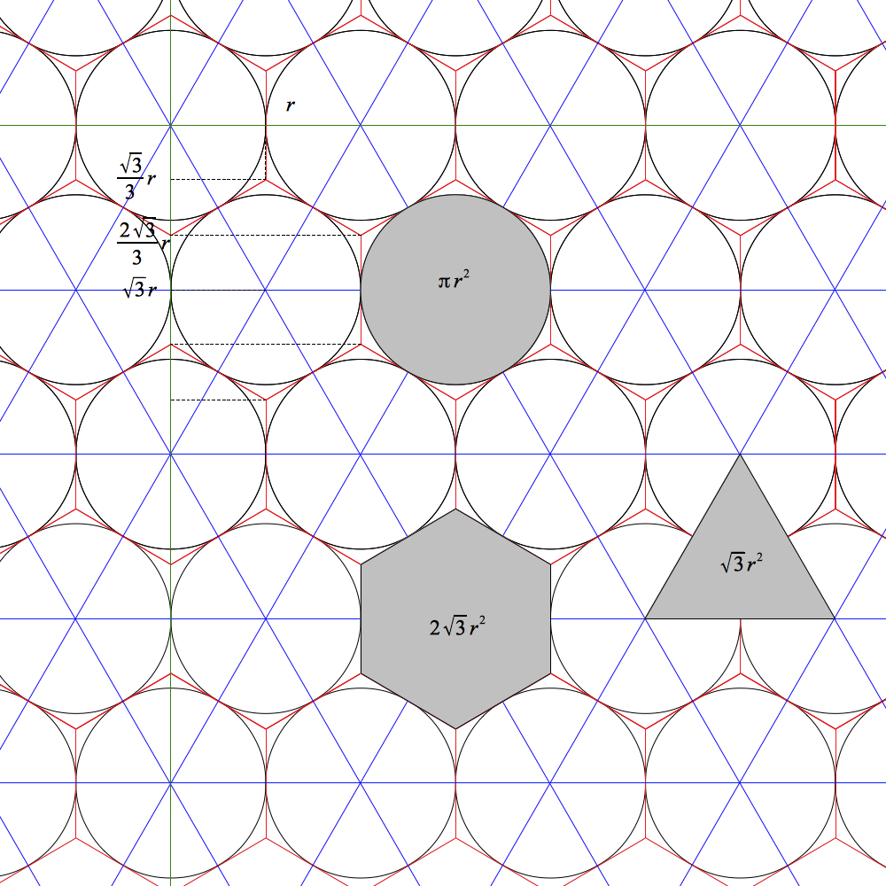
Perfect hexagonal lattice. In the 2D plane, the hexagonal lattice configuration realizes the densest packing of disks.
In 3D, Kepler's conjecture states that the hexagonal close packing and face-centered cubic close packing arrangements of equally sized sphere have the greater density of all arrangements (proven by Thomas Hales in 1998). A hexagonal close packing arrangement is obtained by superposing and staggering two 2D hexagonal lattices of sphere in an ABAB... pattern (Fig. ).
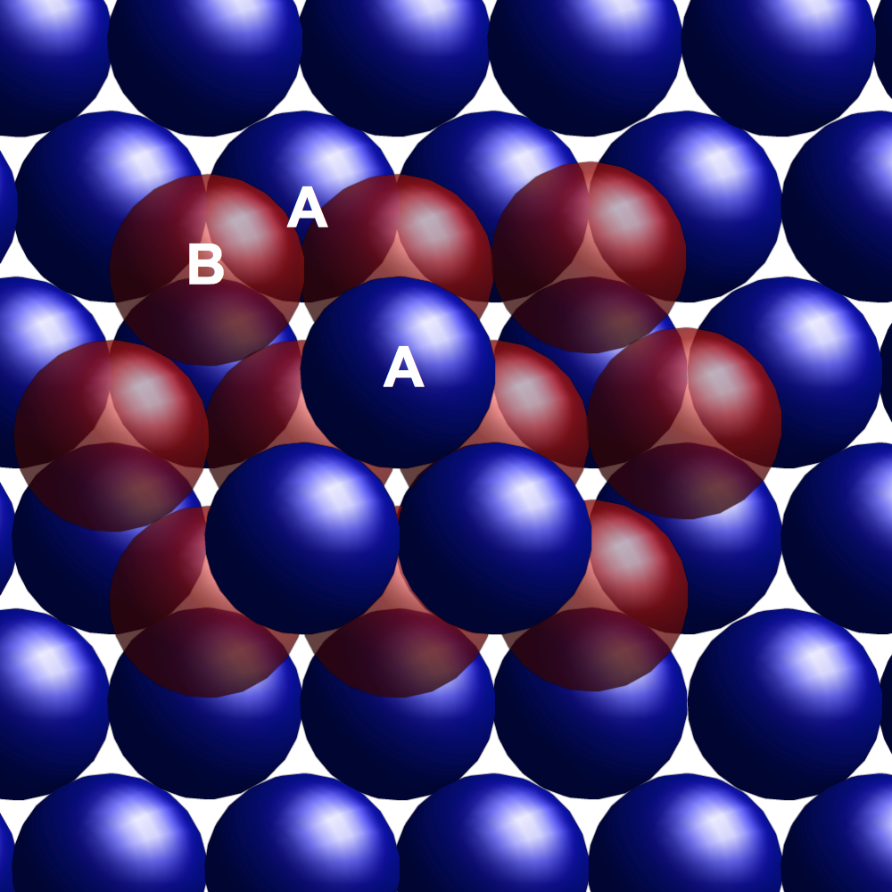
Hexagonal close packing in 3D.
In this arrangement, each sphere touches 12 other spheres, i.e. each cell has 12 neighbors (six neighbors on the 2D plane and three other neighbors on each of the surrounding planes). The typical tile of the dual space-filling tessellation (Voronoi domains) is called a trapezo-rhombic dodecahedron (TRD; Fig. ).
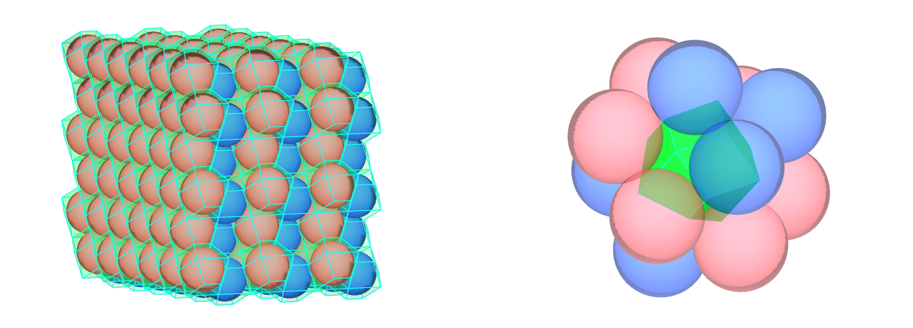
Trapezo-rhombic dodecahedra (TRD) constitute the Voronoi domains of a maximally compact 3D packing of equally sized solid spheres.
In this case, the atomic packing factor is the ratio of the volume of a sphere to the volume of its surrounding TRD and is equal to \(\pi/(3\sqrt{2}) \simeq 0.74048... \). Therefore, in the perfect and uniform arrangement here, the equilibrium distance between any cells \((i,j)\) of equal radii \(R_i = R_j = R\) is constant and reads
We now generalize the notion of distance of equilibrium to pairs of unequally sized neighbor cells. In this case, the common radius of equilibrium depends on individual contributions from each cell, which will be simply proportional to their radius, keeping the same constant coefficient \(c_{\mathrm{eq}}\) above (Fig. ):
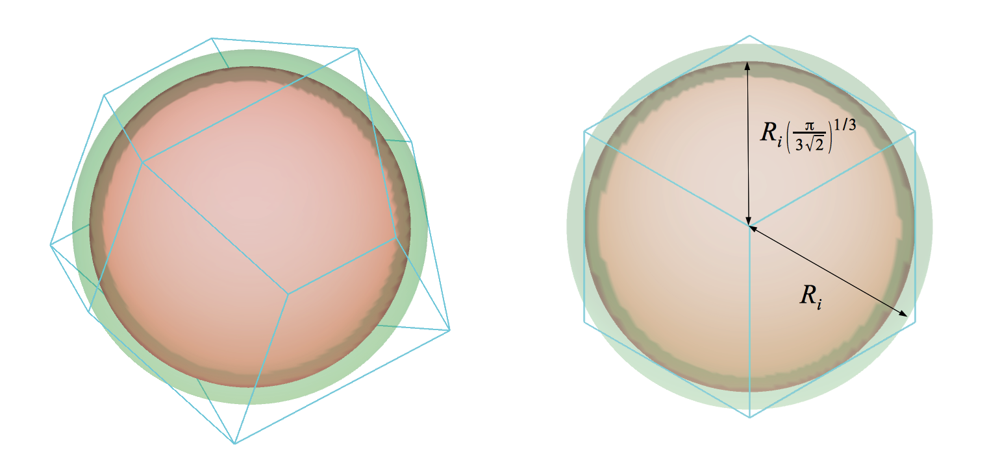
The green sphere has the same volume as the trapezo-rhombic dodecahedron. The orange sphere has a radius \(c_{\mathrm{eq}}R_i\) tangential to each face of the TRD.
In the previous sections, we have established that the contribution of a given cell \(i\) of radius \(R_i\) to the equilibrium distance with neighoring cells was \(r^{\mathrm{eq}}_i = c_{\mathrm{eq}}R_i\) and its contribution to the maximal distance was \(r^{\mathrm{max}}_i = c_{\mathrm{max}}R_i\), where \(c_{\mathrm{eq}} \simeq 0.9 \lt 1\) and \(c_{\mathrm{max}} \simeq 1.24 \gt 1\). As illustrated in Fig. , we can now define the interaction potential \(E^P_i\) around a given cell \(i\) to be repulsive for a distance below \(r^{\mathrm{eq}}_i\) (blue area), attractive between \(r^{\mathrm{eq}}_i\) and \(r^{\mathrm{max}}_i\) (read area), then constant beyond \(r^{\mathrm{max}}_i\).
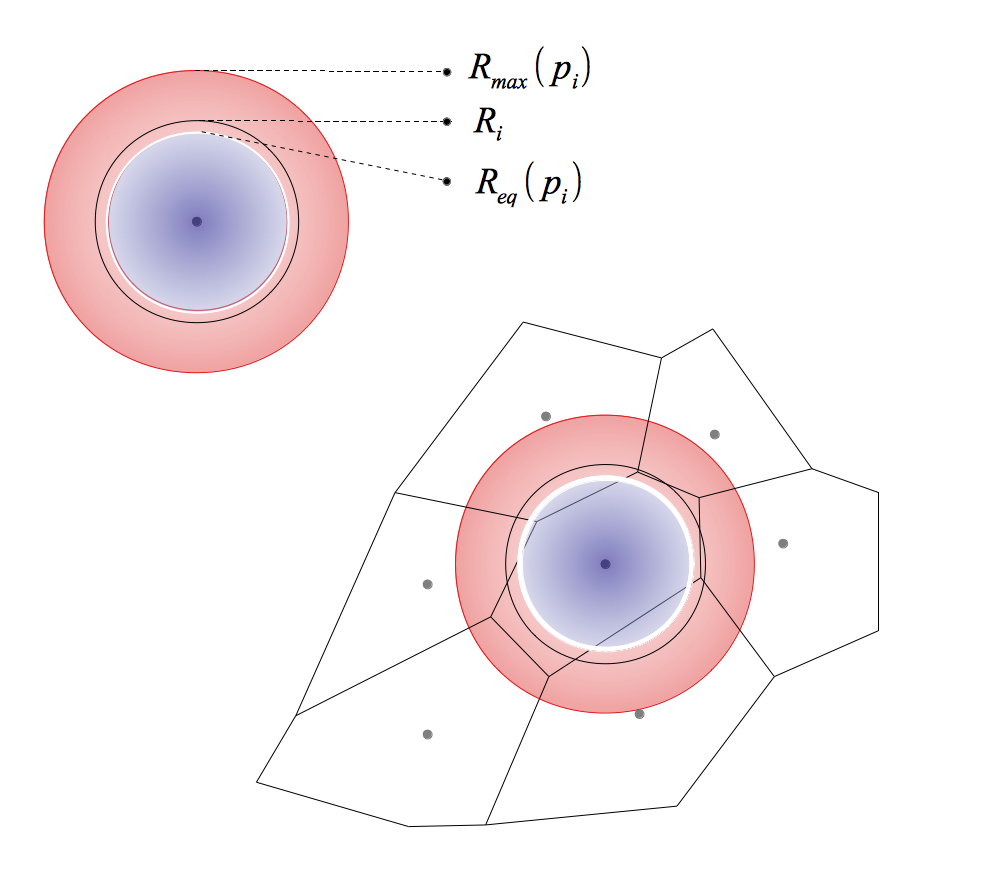
Schema of the particle-cell, its equilibrium distance and its maximum distance of deformation.
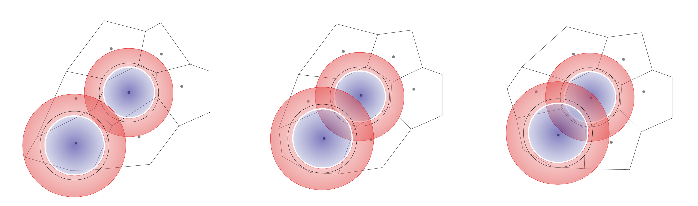
Neighbor particle-cells in attraction (left), equilibrium (middle) and repulsion (right) configuration.
Given these boundary conditions, we consider here the simplest form of schematic mechanical model that can realize both the short-range repulsion and long-range attraction parts, namely: spring-like forces derived from an elastic potential. Thus forces \(\vec{F}^P\) will be a linear function, and potentials \(E^P\) a quadratic function of \((r-r^{\mathrm{eq}})\).
Mechanical interactions between neighboring cells have been extensively studied by the biophysical scientific community, yet due the multiprotein and polymeric nature of the cytoskeleton, membrane flexibility and adhesiveness, it remains an extremely elusive topic difficult to summarize by a definitive set of equations. Roughly, one consensus hypothesis is that a major driving mechanism can be characterized by intercellular surface tension. The two main components of this tension are cellular adhesion, which tends to lower it, and cellular cortical tension, which acts antagonistically. The balance between these two components determines the ultimate behavior of the interaction, i.e. attractive or repulsive.
Another fundamental mechanism must also be taken into account: volume preservation in cells. As we made the assumption that cells are spheroidal and cell interactions can be decoupled into two individual, additive contributions, we assume here that the volume conservation principle participates in the repulsive part of the potential only. This allow us to introduce a correction in the form of a discontinuity in the force derivative at the distance of equilibrium \(r^{\mathrm{eq}}_i\). We will also globally refer as adhesion to the cumulated effect of true surface adhesion and its antagonist, cortical tension.
Accordingly, to modulate the intensity of adhesion, we split the expression of \(F^P\) into two parts, one below and one above the equilibrium distance \(r^{\mathrm{eq}}\), corresponding to two different stiffness coefficients \(w\) (Fig. ). A low (resp. high) adhesion coefficient \(w\) will induce a weak (resp. strong) attraction:
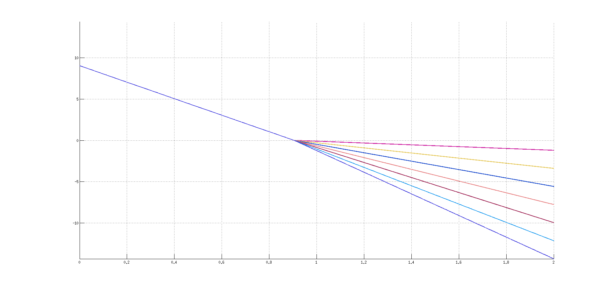
Plot of the linear spring-like force \(\vec{F}^{P,\mathrm{lin}}\). The repulsion coefficient \(w_{\mathrm{rep}}\) is fixed, while the adhesion coefficient \(w_{\mathrm{adh}}\) can vary. Here, the equilibrium distance is \(r^{\mathrm{eq}} = 1\).
Cells \((i,j)\) start to adhere only when their relative distance becomes less than \(r^{\mathrm{max}}_{ij}\). As the intensity of the attraction can not be suddenly maximal at that point, a half-bell shape between \(r^{\mathrm{eq}}_{ij}\) and \(r^{\mathrm{max}}_{ij}\) is better suited to model a more realistic cellular interaction. We obtain this shape by multiplying the linear force \(\vec{F}^{P,\mathrm{linear}}_{ij}\) by the area of the surface of contact \(A_{ij}\) elaborated in Section 3.2.2 and recalled in Fig. (Fig. ).
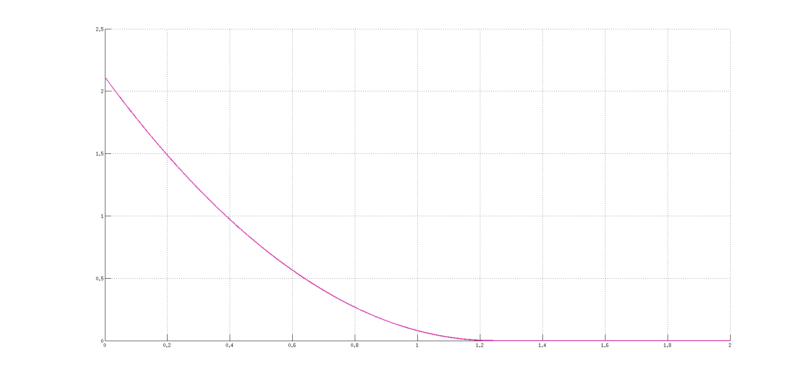
Contact surface area \(A_{ij}\) as a function of intercellular distance \(r_{ij}\). Here, the sum of \(R_i\) and \(R_j\) is \(1\).
In the whole \([0,r^{\mathrm{max}}_{ij}]\) interval, the depth of the well is controlled by a repulsion coefficient \(w_{\mathrm{rep}}\) (until \(r^{\mathrm{eq}}_{ij}\)) and an adhesion coefficient \(w_{\mathrm{adh}}\) (after that), so that the final expression of the nonlinear version of the relaxation force that takes into account the contact surface area reads (Fig. ):
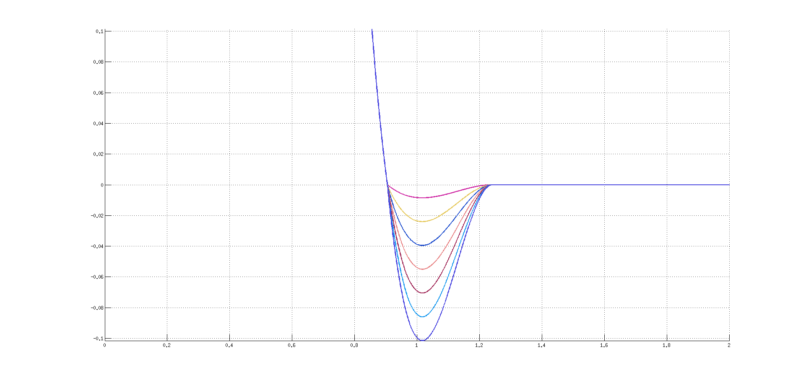
Plot of the relaxation force \(\vec{F}^P\) with variable adhesion coefficient \(w_{\mathrm{adh}}\).
Finally, to compare our custom attraction/repulsion force \(\vec{F}^P_{ij}\) with classical potentials, we show their superimposed plots in Fig. .
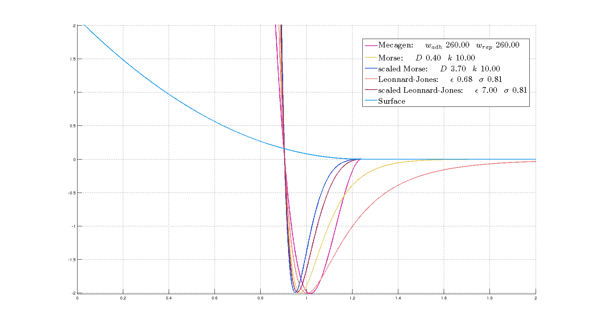
Comparison of the relaxation force used in MECAGEN with various classical attraction-repulsion forces. (See legend inset.)
3.2.4. Cell Specific Behavioral Forces
In addition to the passive, equilibrium-oriented attraction/repulsion forces \(\vec{F}^P_{ij}\), which were calculated in the previous section, we introduce proactive behavioral forces, via an intrinsic term \(\vec{F}^{A,\mathrm{int}}_{ij}\) and its extrinsic counterpart \(\vec{F}^{A,\mathrm{ext}}_{ij}\) (explained below), whose purpose is to represent a schematic model of the cells' specialized biomechanics. During developement and across numerous species, cells manifest a wide variety of mechanical properties and behavioral phenomena. While many different taxonomies have been proposed, we will rely in our work on the cell behavior ontology (CBO) described in Section 5.1.1. Moreover, inside this diverse repertoire, we focus here on one particular mechanism that we believe is the main driving force in the zebrafish early gastrulation, namely: cellular protrusion.
Our mechanical model offers an abstraction of the cell as the microscopic scale of embryogenesis, based on the principle that a protrusion is effective only if it has a support to exert its action upon. (Note that we came up with this idea and designed the force model described below independently from a similar study that was published recently .) In order to explain how we interpret the protrusive activity of a cell at this schematic scale, however, we need to go down one level and dissect the mechanisms responsible for protrusion at the subcellular level. The following description reflects our understanding of protrusion gathered from many readings on this topic in the biomechanical literature. It is still an object of intense scrutiny and debate among researchers.
In summary, cell protrusion is essentially a cyclic activity, somewhat similar to the activity of tracked vehicles (such as tanks) except that, as gravity plays almost no part in cellular interactions, adhesion is regulated in a special way to avoid sliding between the cell surfaces in contact. The protrusive activity induces an intercalation of the cell between its neighbors. One requirement for displaying protrusive activity is polarization. Cells need to have an asymmetrical distribution of internal substances to specify the direction in which they protrude. How the polarization axis is determined in our model will be explained in Chapter 5 on mechanogenetic coupling. For now, we assume it is a given parameter. This polarization axis determines two regions, or poles, of the cell belonging to the extremities. Each pole can be the location of protrusive activity: if only one pole is active, the cell is called monopolar; if both are active, it is called bipolar.
At the subcellular level, the main structure underlying protrusion is the cellular scaffolding called cytoskeleton, whose three main components are microfilaments (similar to an envelope that contracts and dilates), intermediate filaments (similar to cables exerting a tension) and microtubules (similar to beams resisting compression). To explain protrusion, we focus on the microfilaments, which for the most part constitute the cell cortex, a mesh-like network essentially made of actin and myosin molecules that lie just below the plasma membrane and are attached to it by catenin molecules. Actin proteins are rangy molecules that we can consider, metaphorically speaking, the bones of the cell cortex, while myosin molecules play the role of muscles and ligaments linking these bones. When combined, actin and myosin create a strong and flexible tensegrity network that can resist internal and external pressure. Moreover, actin is a polymer which can disassemble itself at one of its extremities and reassemble at the other. This allows an active deformation of the acto-myosin network which, as illustrated in Fig. , is the driving mechanism of protrusion.
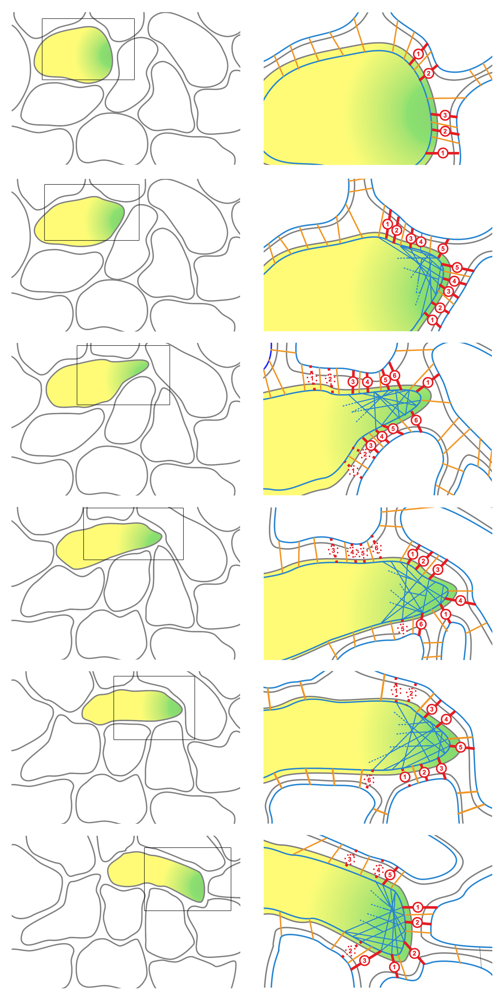
Cellular protrusion illustrated at the subcellular level. The cell cytoskeleton is in blue, the cell membrane in grey, the thin orange edges are the regular adhesion bridges and the thick red edges are focal adhesion points, related to the protrusion. The gradient of color in the cell interior reflects the polarization axis. New focal adhesion points appear at the tip of the cell, move back, then disappear as the cell moves forward.
A cell is attached to its neighbors by molecular bridges (thin orange edges in the illustration), which are essentially cadherin molecules, and actively deform their internal acto-myosin cortical network in the direction of the polarization axis (blue lines and curves). A bulge eventually appears at the active pole, pushing away neighboring cells. No intercalation process would be observed, however, without an accurate regulation of the adhesion contacts between the cells. Thus, in addition to the regular adhesion bonds, special focal adhesion points (thick red edges with numbers in the illustration) also appear at the surface of the protruding region of the cell. These bonds bear the extra load generated by the protrusive activity of the acto-myosin cortex. They become visible around the tip of the bulge and, as the cell is advancing, maintain spatial cohesion between neighboring cytoskeletons. Without them, the cell would slip on the surface, or at least the efficiency of the protrusion would be greatly reduced. Focal adhesion points gradually disappear from the cell membrane as the cell advances relatively to the bonded neighbors.
The coupled action of acto-myosin cortex and the focal adhesion points form a sort of treadmill originating at the tip of the protrusion (Fig. ). This movement induces a torque transmission between the protruding cell and each of the neighbor cells attached by focal adhesion points. The transfer of cell material in the bulge results from the intrinsic force generated by the acto-myosin cortex, while the extrinsic force is exerted on the adjacent cell through the focal adhesion points. In some cases, an additional mechanism of cellular contraction at the back of the cell amplifies the intrinsic force (not included here). We assume that the distribution of focal adhesion points is homogeneous on the surface of the cell, so the quantity of torque transmitted between two neighboring cells \(i\) and \(j\) is proportional to their contact surface area \(A_{ij} = A(r_{ij},R_i,R_j)\).
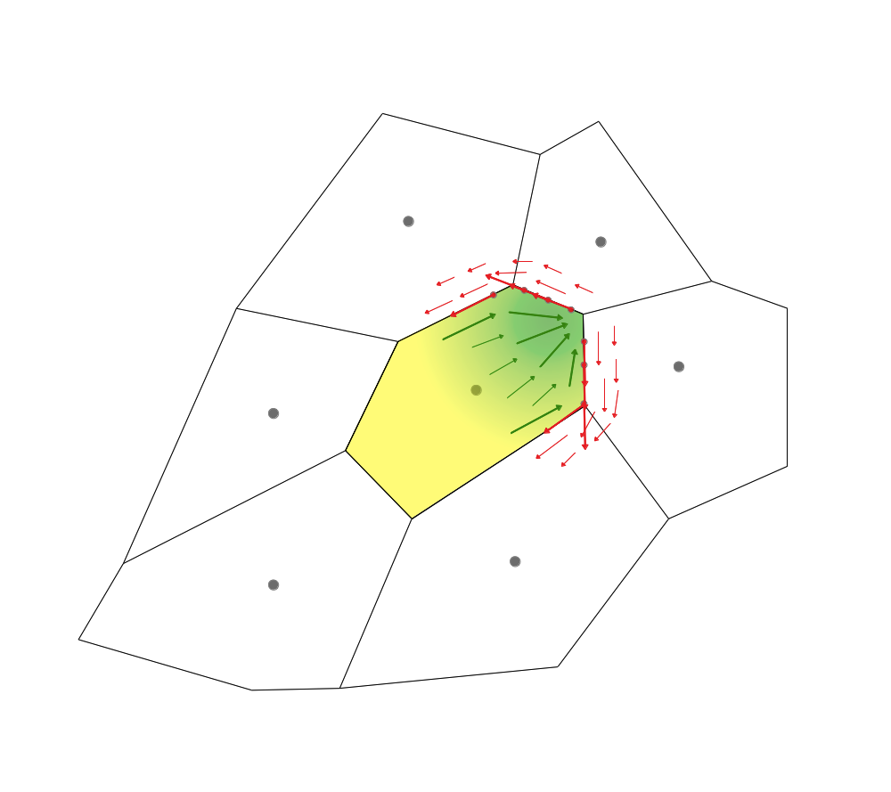
Idealized representation of the protrusive activity in MECAGEN. Green arrows represent the cell interior flow and red arrows the cell neighborhood flow, as the central cell exerts a protrusion over its surroundings.
In our particle-based framework, the mathematical interpretation and representation of this mechanism is the following (Fig. A): a cell \(i\) has a normalized polarization axis \(\vec{U}_i\) that we consider given in this part (black arrow). Later, in Chapter 5 integrating biomechanics and molecular/genetic dynamics, we will explain how this polarization axis can be determined by feedback from molecular signaling, neighboring cell-cell contacts, and/or the active forces themselves (see Section 5.1.4). Among the neighboring cells in \(\mathcal{N}^t_i\), we denote by \(\mathcal{N}^{t+}_i\) the sublist of neighbors that make contact with cell \(i\) on its positive pole, i.e. which are positioned relative to \(i\) in the same general direction as \(\vec{U}_i\) (green pie-slice-shaped domain, comprising here cells \(j\) and \(k\)):
A threshold value \(\eta\) controls the relative size of the protrusion (the angle of the pie slice). Similarly, we denote by \(\mathcal{N}^{t-}_i\) the sublist of neighbors which share a surface of contact on the negative pole of the cell, i.e. away from the polarization vector. This negative neighbor is used in the case of an opposite monopolar or a bipolar protrusion behavior.
In the regular monopolar case illustrated here, for each neighbor \(j\) belonging to \(\mathcal{N}^{t+}_i\), a pair of equal and opposite forces contribute to the motion of both \(i\) and \(j\): an intrinsic force \(\vec{F}^{A,\mathrm{int}}_{ij}\) (larger dashed green arrow) and its simultaneous and exact counterpart \(\vec{F}^{A,\mathrm{ext}}_{ji}\) (larger dashed red arrow), such that \(\vec{F}^{A,\mathrm{ext}}_{ji} = -\vec{F}^{A,\mathrm{int}}_{ij}\). The common axis of these forces is designed to roughly emulate the profile of the surface of contact that can be seen in the polygonal representation of Fig. (but not in the disc-particle representation of Fig. ). It is a linear combination of the unitary protrusion axis \(\vec{U}_i\) and its orthogonal complement \(\vec{U}^{\perp j}_i\) that passes through \(j\), i.e. is calculated by:
where the angle \(\nu\) tunes the profile of the surface of contact (small dashed arrows resulting in the larger dashed arrows) and coefficient \(f^A\) tunes the intensity of the force. The angle could be precisely calculated as a function of the angular position of each neighbor, but we deemed such sophistication unnecessary and opted for a simpler scheme where it is kept constant. We chose here the larger of the two angles that a right triangle with proportions 3-4-5 makes, i.e. \(\arctan(4/3) \approx 53\) degrees or \(0.93\) radians. Experimenting with various angle values around \(45\) degrees, we observed that they made no significant difference. These two parameters \(\nu\) and \(f^A\) will be used especially in Chapter 5 and Case Study 8.5.
Let us consider for now that only cell \(i\) exerts a monopolar protrusive activity on its neighborhood (Fig. B). Each neighbor \(j\) belonging to \(\mathcal{N}^{t+}_i\) contributes a pair of forces \(\vec{F}^{A,\mathrm{int}}_{ij}, \vec{F}^{A,\mathrm{ext}}_{ji}\) described above. Therefore, if cell \(i\) has multiple neighbors in its polar domain (here, \(j\) and \(k\)), the intrinsic forces \(\vec{F}^{A,\mathrm{int}}_{ij}\) and \(\vec{F}^{A,\mathrm{int}}_{ik}\) resulting from each neighboring interaction (both dashed green arrows) are added to produce the final behavioral force \(\vec{F}^{A,\mathrm{int}}_i\) generated by cell \(i\)'s protrusion (solid green arrow; note that it is not necessarily parallel to \(\vec{U}_i\) as we are in 3D).
Then, the same scenario could also happen around cell \(j\), i.e. this cell too could display protrusion, thus create an equivalent set of forces around it (Fig. C, symmetrical with respect to Fig. B). Finally, combining both protruding activities from \(i\) and \(j\), each cell in the neighborhood can be the site of both intrinsic and extrinsic forces (Fig. D): the former come from its own protruding activity (solid green arrows), while the latter from the protruding activity of its neighbors (dashed red arrows). In this particular illustration, the third cell
\(k\) is not protruding, thus its own sum of active forces is only composed of extrinsic components (dashed red arrows) coming from neighbors \(i\) and \(j\). The sum of the forces on \(i\) (resp. \(j\) and \(k\)) yields the net active force on this cell, which corresponds to \(\vec{F}^A_i\) (resp. \(\vec{F}^A_j\) and \(\vec{F}^A_k\)) in its motion equation at the bottom of Section 3.2.1 (but is not shown in Fig. D). Here, \(i\) has one 'int' and one 'ext' component, \(j\) also has one 'int' and one 'ext' component, while \(k\) has 0 'int' and 2 'ext' components. Each net active force leads a cell to move alongside its neighbors and pass through.
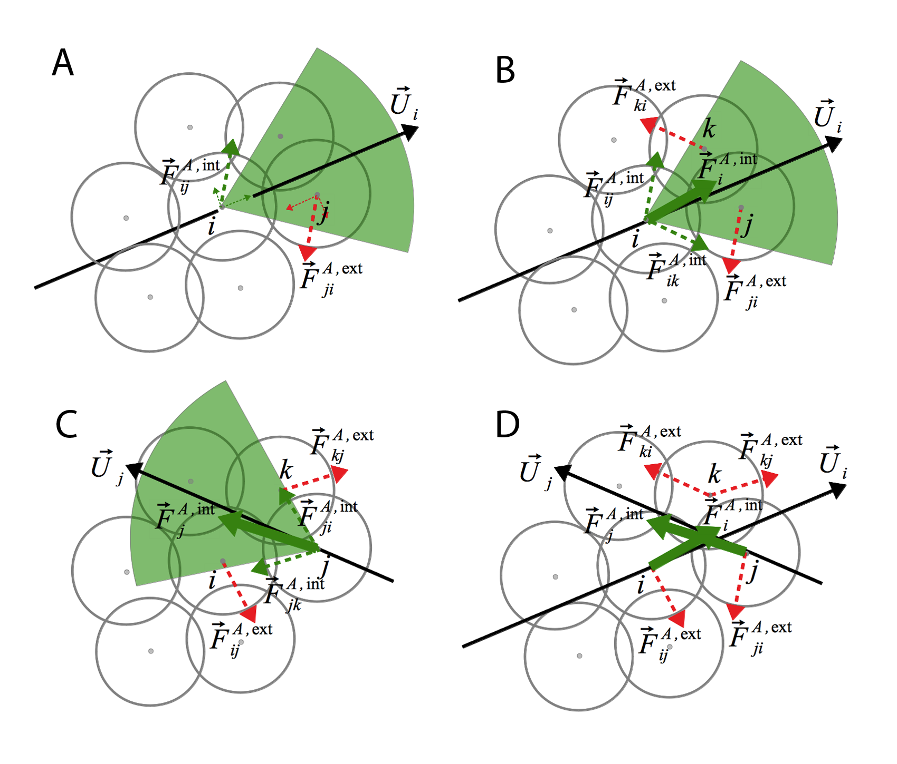
Schematic representation of active protrusive activity in MECAGEN. See text for details. This illustrates the formalization of the idealized mechanism of Fig. in the particle-based framework. (A,B) The polar domain (green slice) of cell \(i\), denoted by \(\mathcal{N}^{t+}_i\), contains two neighbor cells \(j\) and \(k\), over which \(i\) exerts a protrusive force. Intrinsic forces are shown in green and extrinsic forces in red. (A) Highlighting one pair of opposite forces. (B) Forces produced by \(i\)'s activity. (C) Forces produced by \(j\)'s activity if \(j\), too, happens to be protruding. (D) The net resulting active forces (not shown) are obtained by adding the net resulting '\(\mathrm{int}\)' and '\(\mathrm{ext}\)' arrows on each cell.
Finally, at the scale of the whole embryo, the net global force resulting from this complex field of local intrinsic/extrinsic active forces is zero, due to their mutual compensation: \(\vec{F}^A \equiv \sum_i \sum_{j\in\mathcal{N_i}} \vec{F}^A_{ij} = \sum_i \vec{F}^A_i = \vec{0}\). This is a reasonable expectation, as the relative movements of cells with respect to each other (protrusion, construction, migration, etc.) should not have the effect of displacing the embryo but only reshaping it.